<!doctype html>
<html lang="en">
<head>
  <meta charset="utf-8">
  <meta name="viewport" content="width=device-width, initial-scale=1">
  <title>arxiv digest — 2026-08-01</title>
  <style>
:root {
  --bg: #ffffff;
  --fg: #1f2328;
  --muted: #59636e;
  --border: #d0d7de;
  --card: #f6f8fa;
  --link: #0969da;
}
body {
  max-width: 980px;
  margin: 0 auto;
  padding: 2rem 1rem 5rem;
  font-family: -apple-system, BlinkMacSystemFont, "Segoe UI", Helvetica, Arial, sans-serif;
  line-height: 1.55;
  color: var(--fg);
  background: var(--bg);
}
a { color: var(--link); }
img { max-width: 100%; height: auto; }
pre, code { background: var(--card); border-radius: 6px; }
pre { padding: 1rem; overflow-x: auto; }
blockquote { border-left: 4px solid var(--border); padding-left: 1rem; color: var(--muted); }
details { margin: 0.6rem 0; }
summary { cursor: pointer; font-weight: 600; }
.paper-figures-scroll {
  display: flex;
  gap: 1rem;
  overflow-x: auto;
  overscroll-behavior-x: contain;
  padding: 0.75rem 0.25rem 1rem;
  margin: 1rem 0 1.25rem;
  border-top: 1px solid var(--border);
  border-bottom: 1px solid var(--border);
  scroll-snap-type: x proximity;
}
.paper-figure-card {
  flex: 0 0 min(260px, 72vw);
  scroll-snap-align: start;
  background: var(--card);
  border: 1px solid var(--border);
  border-radius: 12px;
  padding: 0.55rem;
}
.paper-figure-card img {
  display: block;
  width: 100%;
  max-height: 240px;
  object-fit: contain;
  background: white;
  border-radius: 8px;
}
.paper-figure-caption {
  display: block;
  margin-top: 0.5rem;
  color: var(--muted);
  font-size: 0.85rem;
}
.figure-strip-hint {
  color: var(--muted);
  font-size: 0.9rem;
  margin-bottom: -0.3rem;
}
</style>
  <!-- MathJax: renders $...$ inline math and $$...$$ display math, plus
       \(...\) and \[...\]. Loaded from the official CDN; works offline
       once cached. Configured to skip code/pre blocks so arxiv IDs that
       look like dollar amounts don't get mangled. -->
  <script>
    window.MathJax = {
      tex: {
        inlineMath: [['$', '$'], ['\\(', '\\)']],
        displayMath: [['$$', '$$'], ['\\[', '\\]']],
        processEscapes: true,
        processEnvironments: true
      },
      options: {
        skipHtmlTags: ['script', 'noscript', 'style', 'textarea', 'pre', 'code'],
        ignoreHtmlClass: 'tex2jax_ignore',
        processHtmlClass: 'tex2jax_process'
      }
    };
  </script>
  <script id="MathJax-script" async
    src="https://cdn.jsdelivr.net/npm/mathjax@3/es5/tex-chtml.js"></script>
</head>
<body>
<header style="background-color: #333; color: white; padding: 15px; margin-bottom: 20px;">
  <h1 style="margin: 0; font-size: 24px;">
    <a href="https://ochelpan.github.io/arXiv_clean/" style="color: white; text-decoration: none;">Main</a>
  </h1>
</header>

<h1>Daily arXiv Report</h1>

<hr>
<p>
<a href="index.html">← Index</a>
 · <a href="papers_03.html">← Previous</a> · <a href="papers_05.html">Next →</a>
</p>
<hr>

<h2>Papers 61–80</h2>
<p><a id="paper-2607.28060"></a></p>
<h3 id="slow-light-enhanced-atomic-frequency-comb-quantum-memory-in-stoichiometric-euclmath500math-6dmath501matho"><a href="http://arxiv.org/abs/2607.28060v1">Slow-light-enhanced Atomic Frequency Comb Quantum Memory in Stoichiometric EuCl$_3 \cdot$ 6D$_2$O</a></h3>
<p><strong>Authors:</strong> Zongfeng Li, Wanting Xiao, Mucheng Guo, Shuping Liu, Fudong Wang, Manjin Zhong<br>
<strong>Type:</strong> both · <strong>Category:</strong> quantum information and computing · <strong>PDF:</strong> <a href="https://arxiv.org/pdf/2607.28060v1">https://arxiv.org/pdf/2607.28060v1</a><br>
<strong>Analysis basis:</strong> full PDF text, analyzed in chunks
<strong>Topic relevance:</strong> <code>interference shaping light</code> <strong>3/5</strong> · <code>quantum optics experiment</code> <strong>3/5</strong> · <code>non-equilibrium dynamics</code> <strong>2/5</strong> · <code>Keldysh / 2PI / non-Gaussian methods</code> <strong>1/5</strong> · <code>QC/QI experiment</code> <strong>1/5</strong> · <code>driven-dissipative phase transition</code> <strong>1/5</strong> · <code>methods for driven-dissipative</code> <strong>1/5</strong></p>
<div class="figure-strip-hint">↔ Scroll figures horizontally</div>
<div class="paper-figures-scroll">
<figure class="paper-figure-card">
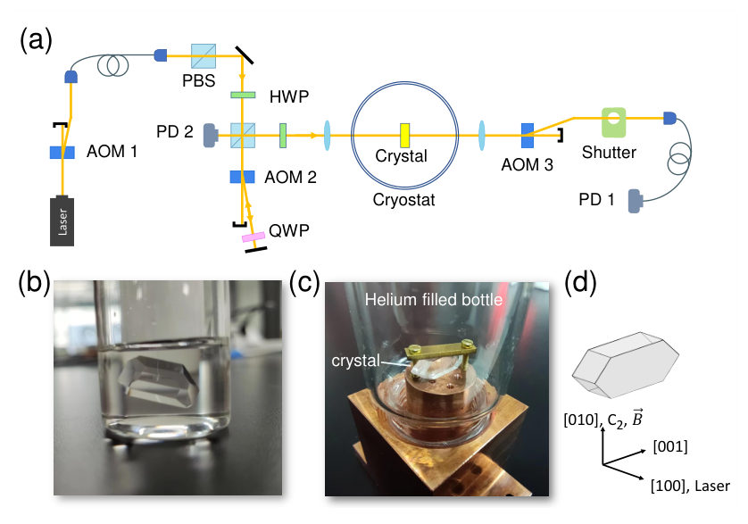
<figcaption class="paper-figure-caption"><b>Fig 1.</b> FIG. 1. Schematic diagram of the optical experimental setup and crystal orientation. (a) AOM: acousto-optic modulator, HWP: half wave plate, QWP: quarter wave plate, PD: photodiode. (b) The EuCl3 · 6 D2O single crystal grown in a heavy water solution. (c) The crystal is mounted in a helium filled bottle and on a copper base. (d) Crystal cleaved along the (100) plane.</figcaption>
</figure>
<figure class="paper-figure-card">

<figcaption class="paper-figure-caption"><b>Fig 2.</b> Figure 2(a) displays a typical prepared comb-like absorption structure. Such a periodic profile allows an incoming light pulse to be stored and later retrieved as a photon echo [7]. The directly measured optical depth, defined as −ln (Iout/Iin), is limited to approximately 4.5 by the detector’s dynamic range; however, the actual OD is estimated at ∼25 (see Fig. 6). We achieved optimal storage efficiency for classical light by tuning the AFC finesse and pump pulse repetitions. These optimized parameters were subsequently applied to weak coherent pulse storage. As shown in Fig. 2(b), the time-dependent storage efficiency yields a 1/e storage lifetime of 5.3 µs. We achieved peak storage...</figcaption>
</figure>
<figure class="paper-figure-card">
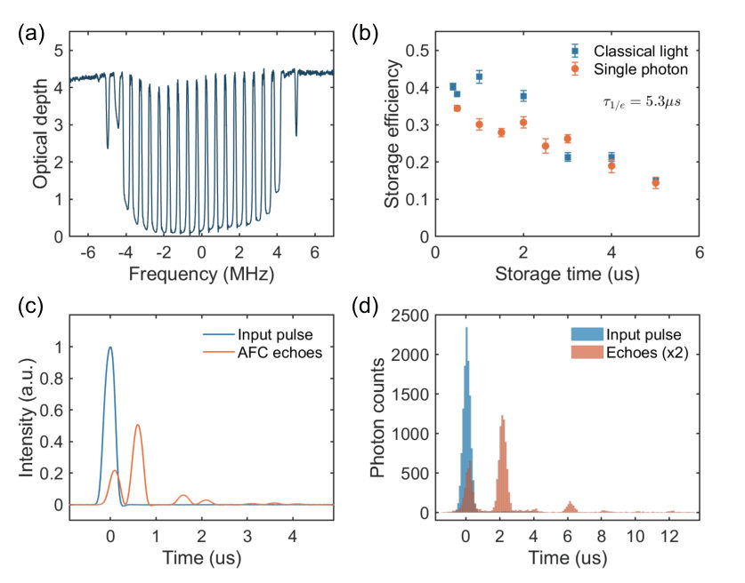
<figcaption class="paper-figure-caption"><b>Fig 3.</b> FIG. 2. Efficient AFC storage in EuCl3 · 6 D2O. (a) An 8-MHz-wide AFC spectrum with a storage time of 2 µs is burned by two parallel 4-MHz-wide comb burning pulses centered at -2 MHz and 2 MHz, to avoid over-pumping at the center and under- pumping at edges. (b) The storage efficiency of classical light and single photons at various storage times. An exponential fit to both datasets gives a 1/e storage time of 5.3 µs. (c) Average trace (1000 runs) of a classical light storage of 0.5 µs and (d) 6000 times integration of weak coherent light storage of 2 µs.</figcaption>
</figure>
<figure class="paper-figure-card">
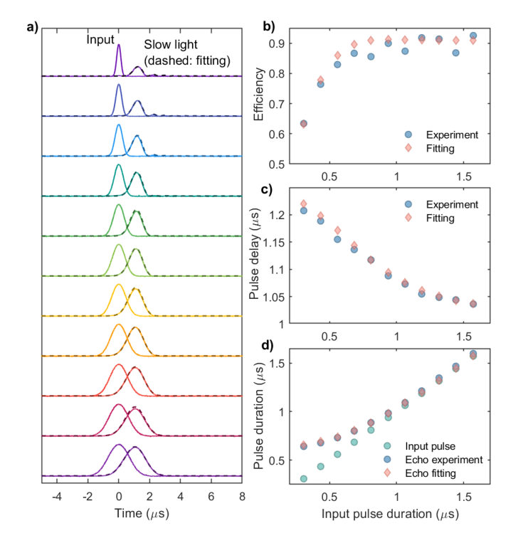
<figcaption class="paper-figure-caption"><b>Fig 4.</b> FIG. 3. Spectral hole memory (slow-light). (a) A pulse with varying duration(bandwidth) sent into a 1-MHz-wide spectral hole. (b), (c) and (d) The comparison of experiment and fitting results of efficiency (pulse area), delay time and pulse duration, respectively.</figcaption>
</figure>
<figure class="paper-figure-card">
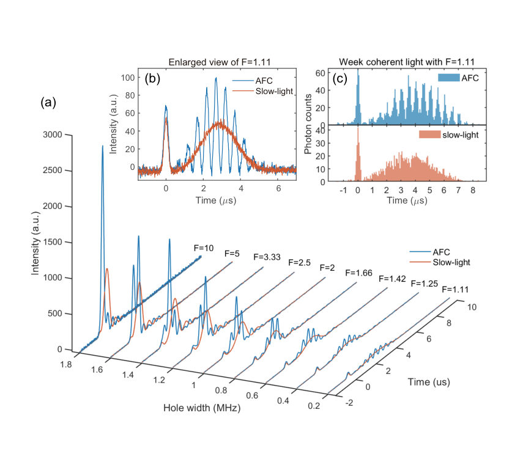
<figcaption class="paper-figure-caption"><b>Fig 5.</b> FIG. 4. (a) AFC memory (blue, composed of 6 spectral holes and ∆= 2 MHz) versus one-hole slow-light memory (orange, identical hole width to the AFC) of an identical input field, under a varying hole width (AFC finesse F). (b) Enlarged view of the F = 1.11 curve in (a). (c) AFC and slow-light memory traces for weak coherent light, with a hole width of 0.2 MHz.</figcaption>
</figure>
</div>

<p><strong>Summary.</strong> The authors report achieving high-efficiency quantum storage in a solid-state crystal, EuCl3·6D2O, by utilizing the Atomic Frequency Comb (AFC) mechanism. They demonstrate that this material overcomes low optical depth limitations and develop a theoretical model showing how dispersion and absorption cooperate to mediate robust slow-light echo generation. This establishes a promising pathway for practical quantum memory devices.</p>
<p><strong>Why it may be interesting.</strong> This work is highly relevant as it tackles solid-state quantum memory using AFCs, which is a critical component for building scalable quantum repeaters and networks. The detailed modeling of dispersion/absorption interplay provides deep insight into open quantum systems dynamics.</p>
<details>
<summary>Detailed structure</summary>
<p><strong>Main problem.</strong> The research addresses the challenge of achieving high-efficiency quantum storage for quantum networks by overcoming the limitations imposed by low optical depth in traditional free-space atomic frequency comb (AFC) schemes.</p>
<p><strong>Main result.</strong> They demonstrated robust, high-efficiency quantum memory using a stoichiometric EuCl3·6D2O crystal, achieving slow-light storage efficiencies exceeding 90% and validating the material as a scalable solid-state platform.</p>
<p><strong>Method.</strong> The study combines experimental measurements of AFC storage efficiency with theoretical modeling that develops a unified framework accounting for both absorption and dispersion effects in the medium.</p>
<p><strong>Model / system.</strong> The physical system is the stoichiometric EuCl3·6D2O crystal, which acts as the quantum memory. The model involves analyzing light propagation governed by complex absorption coefficients derived from spectral hole burning (AFC) phenomena.</p>
<p><strong>Key observables.</strong> Storage efficiencies (e.g., 42.9% for classical light, 90% for slow-light), echo delays, and finesse-dependent echo intensity modulation.</p>
<p><strong>Important parameters / regimes.</strong> Comb period ($\Delta= 2	ext{ MHz}$), finesse ($F = 4.4$), optical depth (OD), and storage delay times up to $0.25 \mu	ext{s}$.</p>
<p><strong>Assumptions / limitations.</strong> The analysis assumes the AFC behaves as a coherent superposition of multiple slow-light modes, and that overall dispersion span dictates the echo delay.</p>
<p><strong>Figures summary.</strong> Figures illustrate efficient AFC storage measurements (Fig. 2), spectral hole memory results vs. pulse bandwidth (Fig. 3), finesse dependence of echoes (Fig. 4), and how echo delay scales with optical depth (Fig. 6).</p>
<p><strong>Paper structure.</strong> The paper moves from establishing the physical platform and experimental setup to developing a unified theoretical framework that models light propagation in the frequency domain, culminating in quantitative comparisons between theory and experiment.</p>
</details>
<details>
<summary>Abstract</summary>
<p>Rare-earth-doped crystals are promising candidates for quantum storage, yet their performance in free-space configurations is fundamentally restricted by low optical depth. Here, we demonstrate high-efficiency quantum storage in a stoichiometric EuCl$_3 \cdot$ 6D$_2$O crystal, which intrinsically provides high optical density without the complexity of cavity implementation. We show that in this high-density regime, the system exhibits significant slow-light-like effects, including dispersion-induced echo delays and finesse-dependent echo intensity modulation. We develop a unified theoretical framework showing how absorption and dispersion work in concert to mediate echo generation. We achieve storage efficiencies of 42.9% for classical light and 34.4% for weak coherent pulses, alongside 90% efficiency for slow-light storage. These findings validate EuCl$_3 \cdot$ 6D$_2$O as a robust platform, establishing a viable pathway for scalable solid-state quantum memory.</p>
</details>
<p><sub><a href="#top">↑ back to top</a></sub></p>

<p><a id="paper-2607.27695"></a></p>
<h3 id="unconventional-and-fragile-magnetic-exciton-in-a-van-der-waals-quantum-magnet"><a href="http://arxiv.org/abs/2607.27695v1">Unconventional and Fragile Magnetic Exciton in a van der Waals Quantum Magnet</a></h3>
<p><strong>Authors:</strong> Kai-Xuan Zhang, Min Zhang, Minjae Kim, Yong-Hyun Kim, Junghyun Kim, Heejun Yang, Pyeongjae Park, Chaebin Kim, Mangesh Diware, Junik Hwang, Youjin Lee, Byeong-Gwan Cho, Hyeong-Do Kim, Tae-Yeong Koo, Chunhua Chen, Mingtao Li, Xujie Lü, Wenge Yang, Kee-Hoon Kim, Seung-Ho Baek, Hyeonsik Cheong, Sung-Keun Lee, Beom Hyun Kim, Christopher Lane, Jian-Xin Zhu, Zhaorong Yang, Young-Woo Son, Je-Geun Park<br>
<strong>Type:</strong> both · <strong>Category:</strong> strongly correlated electrons · <strong>PDF:</strong> <a href="https://arxiv.org/pdf/2607.27695v1">https://arxiv.org/pdf/2607.27695v1</a><br>
<strong>Analysis basis:</strong> full PDF text, analyzed in chunks
<strong>Topic relevance:</strong> <code>exotic spin models in light-matter</code> <strong>3/5</strong> · <code>spintronics-quantum-optics interface</code> <strong>3/5</strong> · <code>driven-dissipative phase transition</code> <strong>2/5</strong> · <code>Kondo &amp; dissipative impurity</code> <strong>1/5</strong> · <code>analog quantum simulation</code> <strong>1/5</strong> · <code>correlated cavity matter</code> <strong>1/5</strong> · <code>non-equilibrium dynamics</code> <strong>1/5</strong></p>
<div class="figure-strip-hint">↔ Scroll figures horizontally</div>
<div class="paper-figures-scroll">
<figure class="paper-figure-card">
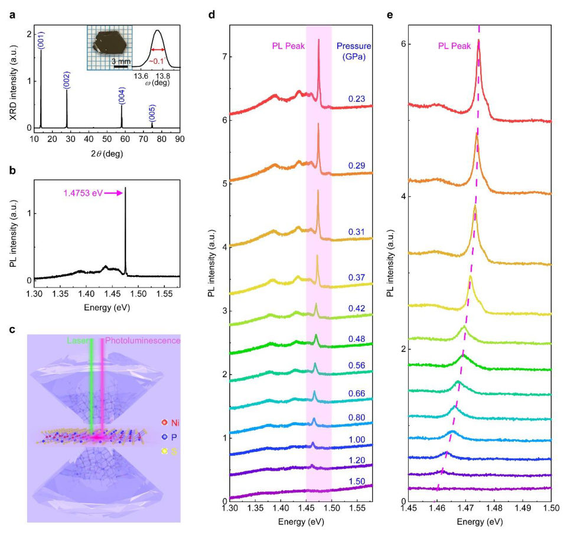
<figcaption class="paper-figure-caption"><b>Fig 1.</b> Fig. 1 | Photoluminescence under varying pressures. a, Optical images and XRD pattern of the</figcaption>
</figure>
<figure class="paper-figure-card">
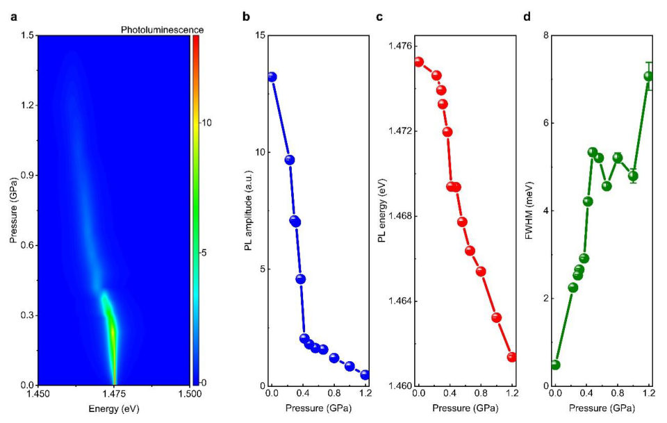
<figcaption class="paper-figure-caption"><b>Fig 2.</b> Fig. 2 | Evolution of pure excitonic peak and its physical parameters under pressure. a,</figcaption>
</figure>
<figure class="paper-figure-card">
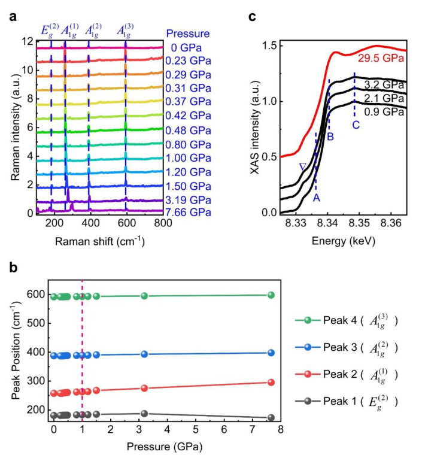
<figcaption class="paper-figure-caption"><b>Fig 3.</b> Fig. 3 | Raman and XAS spectra under changing pressures. a, Raman spectra of NiPS3 at 7 K</figcaption>
</figure>
<figure class="paper-figure-card">
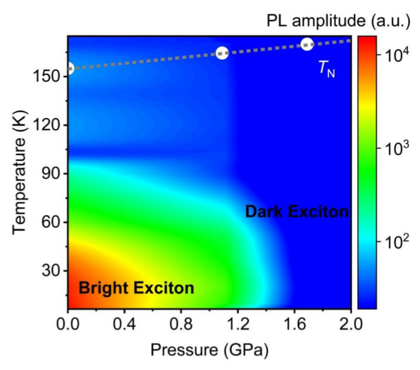
<figcaption class="paper-figure-caption"><b>Fig 4.</b> Fig. 4 | Temperature-pressure quantum phase diagram. An experimental T-P phase diagram</figcaption>
</figure>
<figure class="paper-figure-card">
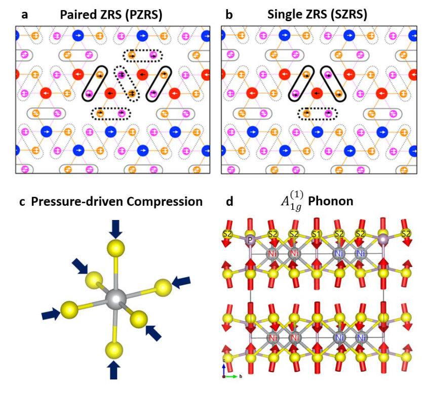
<figcaption class="paper-figure-caption"><b>Fig 5.</b> Fig. 5 | Possible scenarios for the fragile nature of the magnetic exciton. a-b, Concept of the</figcaption>
</figure>
</div>

<p><strong>Summary.</strong> This paper investigates the fragile nature of a magnetic exciton in NiPS3 using hydrostatic pressure as a tuning tool. By showing that the exciton's sharp photoluminescence is quenched at low pressures without structural changes, the authors argue against simple disorder or lattice effects. They propose that a higher-order correlated mechanism, involving crystal field splitting and symmetry breaking, governs this fascinating quantum optical phenomenon.</p>
<p><strong>Why it may be interesting.</strong> The work provides a detailed case study of how external pressure can tune the coherence and visibility of an excitonic state in a strongly correlated magnetic material, linking optical properties to underlying quantum mechanical symmetries and correlations.</p>
<details>
<summary>Detailed structure</summary>
<p><strong>Main problem.</strong> The study aims to resolve the origin of the sharp, optically bright magnetic exciton in NiPS3, particularly understanding why this transition remains bright despite being nominally spin-forbidden.</p>
<p><strong>Main result.</strong> The optical brightness is shown to be independent of chemical disorder or lattice expansion, suggesting a higher-order correlated mechanism governs the exciton's stability. The exciton undergoes complete quenching at low pressures (1.5 GPa) without structural reconstruction.</p>
<p><strong>Method.</strong> The research combines high-pressure experimental measurements (PL, Raman, XAS, NMR) with first-principles many-body calculations to probe the system's response to external tuning parameters.</p>
<p><strong>Model / system.</strong> The physical system is the van der Waals antiferromagnet NiPS3. The model involves excitons arising from transitions between Zhang-Rice triplet (ZRT) and singlet (ZRS) states, analyzed using concepts like paired ZRS (PZRS) states.</p>
<p><strong>Key observables.</strong> Photoluminescence peak intensity/energy, Neel temperature ($T_N$), Raman phonon modes, XAS pre-edge features, and the pressure dependence of these quantities.</p>
<p><strong>Important parameters / regimes.</strong> Hydrostatic pressure (up to 1.5 GPa), Temperature, Exciton energy ($\sim 1.47 	ext{ eV}$), Crystal field splitting ($\Delta_{10Dq}$).</p>
<p><strong>Assumptions / limitations.</strong> The initial assumption is that the exciton's behavior can be mapped onto structural or magnetic changes; this is challenged by showing PL suppression occurs without such reconstruction.</p>
<p><strong>Figures summary.</strong> Figures illustrate PL peak suppression and redshift under pressure, comparison of Raman/XAS spectra across pressures, and conceptual diagrams detailing mechanisms like PZRS states, crystal field splitting enhancement, and symmetry breaking via $A_{1g}^{(1)}$ phonons.</p>
<p><strong>Paper structure.</strong> The paper establishes the mystery (bright exciton in NiPS3), uses hydrostatic pressure as a clean tuning parameter to test hypotheses (disorder vs. intrinsic instability), presents evidence ruling out structural/electronic changes (Raman, XAS, NMR), and concludes by proposing higher-order correlated mechanisms involving symmetry breaking.</p>
</details>
<details>
<summary>Abstract</summary>
<p>The recently discovered magnetic exciton in the van der Waals (vdW) antiferromagnet NiPS3 exemplifies these phenomena, exhibiting several distinctive characteristics. Despite extensive investigation, much of its physics remains unresolved, with key questions about why the NiPS3 magnetic exciton is so sharp and optically bright despite the nominally spin-forbidden transition, posing significant challenges to a proper understanding and practical manipulation of the exciton. An urgent question is to what extent it is due to chemical disorder, magnetic weakening, lattice modification, or intrinsic instability of the bright exciton itself: answers to which will put stringent constraints on possible theoretical models. Here we address these questions using hydrostatic pressure as a clean, continuous, reversible, and in-situ tuning parameter. We find that the sharp photoluminescence peak is drastically suppressed by as little as 0.4 GPa and completely quenched by 1.5 GPa, with demonstrating its reversibility. Crucially, this bright-to-dark conversion occurs without magnetic, crystallographic, or electronic reconstruction despite an increase in the Neel temperature, as established by Raman, X-ray absorption, nuclear magnetic resonance spectroscopy, and first-principles many-body calculations. Our results demonstrate that the optical brightness of the magnetic exciton is independent of chemical disorder, lattice expansion, and weakening of magnetic order, indicating that a higher-order correlated mechanism governs the bright exciton. We further propose experimentally constrained microscopic scenarios involving exciton pairing, crystal-field-controlled spin-orbit mixing, and symmetry breaking, providing a framework for future tests of entangled magnetic exciton in correlated quantum magnets.</p>
</details>
<p><sub><a href="#top">↑ back to top</a></sub></p>

<p><a id="paper-2607.28613"></a></p>
<h3 id="lattice-composite-fermi-liquid-with-broken-inversion-symmetry"><a href="http://arxiv.org/abs/2607.28613v1">Lattice composite Fermi liquid with broken inversion symmetry</a></h3>
<p><strong>Authors:</strong> Pavel A. Nosov, Zhengyan Darius Shi<br>
<strong>Type:</strong> theory · <strong>Category:</strong> strongly correlated electrons · <strong>PDF:</strong> <a href="https://arxiv.org/pdf/2607.28613v1">https://arxiv.org/pdf/2607.28613v1</a><br>
<strong>Analysis basis:</strong> full PDF text, analyzed in chunks
<strong>Topic relevance:</strong> <code>Keldysh / 2PI / non-Gaussian methods</code> <strong>3/5</strong> · <code>analog quantum simulation</code> <strong>2/5</strong> · <code>non-equilibrium dynamics</code> <strong>2/5</strong> · <code>correlated / nonlocal dissipation</code> <strong>1/5</strong> · <code>driven-dissipative phase transition</code> <strong>1/5</strong> · <code>methods for driven-dissipative</code> <strong>1/5</strong> · <code>non-equilibrium universality</code> <strong>1/5</strong></p>
<div class="figure-strip-hint">↔ Scroll figures horizontally</div>
<div class="paper-figures-scroll">
<figure class="paper-figure-card">
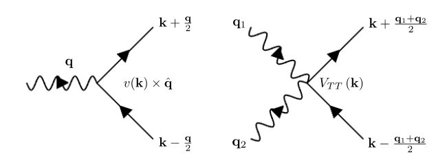
<figcaption class="paper-figure-caption"><b>Fig 1.</b> FIG. 1. Paramagnetic (left) and diamagnetic (right) vertices for the lattice CFL with arbitrary CF dispersion ξ(k). ˆqT defines the direction transverse to q, vF (k) ≡∇kξ(k) is the Fermi velocity, and VT T is the projection of the diamagnetic form factor Vij ≡∂ki∂kjξ(k) onto the transverse subspace.</figcaption>
</figure>
<figure class="paper-figure-card">
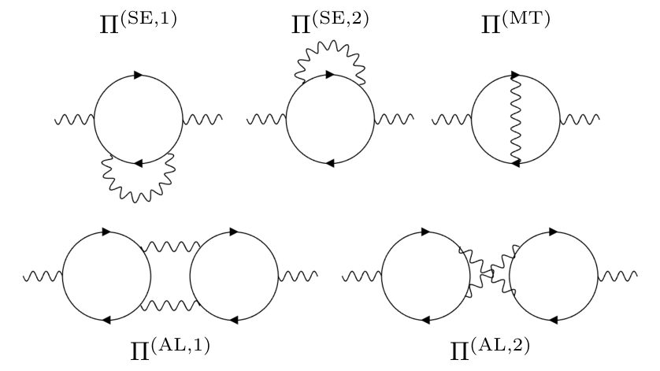
<figcaption class="paper-figure-caption"><b>Fig 2.</b> FIG. 2. The set of paramagnetic diagrams contributing to σij CF at O(N −1). All vertex factors are taken to be f(k, ˆq) = vF (k)× ˆq in accordance with Fig. 1. Diagrams that involve diamagnetic vertices are subleading in the low energy limit, as we show in Appendix B.</figcaption>
</figure>
<figure class="paper-figure-card">
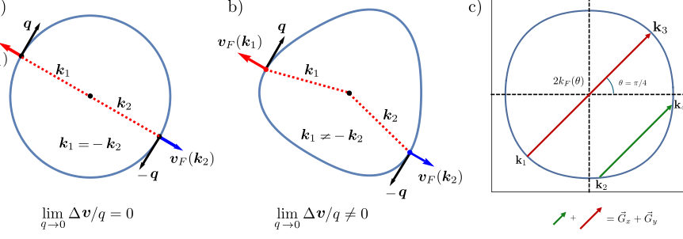
<figcaption class="paper-figure-caption"><b>Fig 3.</b> FIG. 3. On-shell scattering kinematics controlling optical and DC transport. (a) For a convex inversion-symmetric Fermi surface, the on-shell scattering with small momentum transfer q selects two antipodal tangential patches, k1 = −k2, and the leading total velocity change vanishes, limq→0 ∆v/q = 0. (b) For a generic convex C3-symmetric Fermi surface without inversion symmetry, the tangential on-shell patches are no longer antipodal and the cancellation fails, limq→0 ∆v/q ̸= 0, allowing the collisions to relax the current. c) A typical four-fermion Umklapp process in the lattice CFL that contributes to the DC resistivity. Singular temperature dependence can arise when the 2kF vertex...</figcaption>
</figure>
<figure class="paper-figure-card">
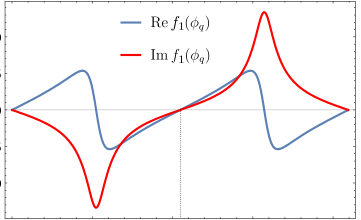
<figcaption class="paper-figure-caption"><b>Fig 4.</b> FIG. 4. Angular dependence of f1(ϕq) (left panel) and ˜f2(ϕq) = p</figcaption>
</figure>
<figure class="paper-figure-card">
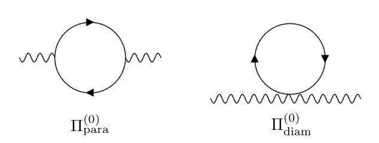
<figcaption class="paper-figure-caption"><b>Fig 5.</b> FIG. 5. At leading order in the 1/N expansion, there are two diagrams that contribute to the gauge field self energy. The first Π(0) para involves two insertions of the paramagnetic current vertex, while the second Π(0) diam involves a single insertion of the diamagnetic current vertex.</figcaption>
</figure>
</div>

<p><strong>Summary.</strong> This theoretical work investigates transport phenomena in lattice composite Fermi liquids where inversion symmetry is broken. The authors derive unique, non-analytic scaling laws for optical resistivity and Hall conductivity that are forbidden in simpler continuum models. These predictions offer testable signatures for experimental measurements on advanced 2D materials.</p>
<p><strong>Why it may be interesting.</strong> It provides concrete, measurable signatures (non-analytic power laws in $\omega$ or $q$) that distinguish lattice models from continuum theories, offering direct guidance for interpreting THz/acoustic measurements in novel 2D materials like twisted MoTe2.</p>
<details>
<summary>Detailed structure</summary>
<p><strong>Main problem.</strong> To determine the distinct transport signatures of lattice composite Fermi liquids (CFLs) when inversion symmetry is broken, comparing them to continuum quantum Hall systems.</p>
<p><strong>Main result.</strong> Inversion breaking leads to non-analytic longitudinal optical resistivity ($\sim |\omega|^{4/3}$ at $q=0$) and nonreciprocal transport ($\sim |q|$ dependence in $\sigma_{LT}$) that are absent in symmetric CFLs.</p>
<p><strong>Method.</strong> Analytical calculations using effective field theory, parton decomposition, and scaling analysis of quantum corrections to conductivity tensors.</p>
<p><strong>Model / system.</strong> Lattice composite Fermi liquids realized in half-filled Chern bands with broken inversion symmetry. The system is modeled via an effective action involving composite fermions (CFs) interacting with gauge fields.</p>
<p><strong>Key observables.</strong> Longitudinal optical resistivity ($    ext{Re } 
ho_{xx}(\omega)$), Hall conductivity ($\sigma_{LT}$), and DC resistivity temperature dependence ($    ext{Re } 
ho_{xx}(T)$).</p>
<p><strong>Important parameters / regimes.</strong> Zero wave vector ($q=0$), finite wave vector ($q$), frequency ($\omega$), and temperature ($T$). The symmetry breaking parameter $\lambda$ is crucial.</p>
<p><strong>Assumptions / limitations.</strong> The analysis relies on the kinematic regime for surface acoustic wave probes and uses approximations like Random Phase Approximation (RPA) in some derivations.</p>
<p><strong>Figures summary.</strong> Not specified, but notes reference specific equations (e.g., B25-B28) detailing scaling of correlation functions involving diamagnetic and paramagnetic vertices.</p>
<p><strong>Paper structure.</strong> The paper systematically analyzes transport properties by first establishing the effective theory for CFLs, then calculating response functions ($\Pi$) using diagrammatic techniques, focusing on how symmetry breaking modifies the low-energy scaling exponents for resistivity and conductivity components.</p>
</details>
<details>
<summary>Abstract</summary>
<p>We study transport in lattice composite Fermi liquids realized in half-filled Chern bands with broken inversion symmetry. We show that reduced crystalline symmetry exposes intrinsic singular dynamical responses of composite fermions that are otherwise hidden in the conventional Landau-level setting. At zero wave vector, inversion breaking allows gauge-field fluctuations to generate a non-analytic longitudinal optical resistivity, with $\operatorname{Re}ρ^{xx}(ω)\sim |ω|^{4/3}$ for gate-screened Coulomb interactions. At finite wave vector $\mathbf{q}$, inversion breaking leads to nonreciprocal transport and a non-analytic $\sim |\mathbf{q}|$ dependence of the Hall conductivity, both of which can be probed through surface acoustic wave propagation. We also discuss a distinct mechanism for singular DC transport in lattice composite Fermi liquids: renormalization of $2k_F$ scattering at the composite Fermi surface enhances Umklapp relaxation and can lead to a non-analytic temperature dependence of the resistivity. Taken together, our results identify transport signatures of lattice composite Fermi liquids that are absent in their continuum quantum Hall counterparts and can be directly tested in ongoing experiments on twisted MoTe$_2$ and rhombohedral graphene, where evidence for zero-field composite Fermi liquids has recently been reported.</p>
</details>
<p><sub><a href="#top">↑ back to top</a></sub></p>

<p><a id="paper-2607.28493"></a></p>
<h3 id="generating-broadband-optical-squeezing-via-cascaded-micro-ring-resonators"><a href="http://arxiv.org/abs/2607.28493v1">Generating broadband optical squeezing via Cascaded Micro-Ring Resonators</a></h3>
<p><strong>Authors:</strong> Chung-Hsien Wang, Tian Zhong<br>
<strong>Type:</strong> theory · <strong>Category:</strong> other · <strong>PDF:</strong> <a href="https://arxiv.org/pdf/2607.28493v1">https://arxiv.org/pdf/2607.28493v1</a><br>
<strong>Analysis basis:</strong> full PDF text, analyzed in chunks
<strong>Topic relevance:</strong> <code>interference shaping light</code> <strong>3/5</strong> · <code>Keldysh / 2PI / non-Gaussian methods</code> <strong>1/5</strong> · <code>analog quantum simulation</code> <strong>1/5</strong> · <code>correlated / nonlocal dissipation</code> <strong>1/5</strong> · <code>correlated cavity matter</code> <strong>1/5</strong> · <code>driven-dissipative phase transition</code> <strong>1/5</strong> · <code>methods for driven-dissipative</code> <strong>1/5</strong> · <code>quantum optics experiment</code> <strong>1/5</strong></p>
<div class="figure-strip-hint">↔ Scroll figures horizontally</div>
<div class="paper-figures-scroll">
<figure class="paper-figure-card">
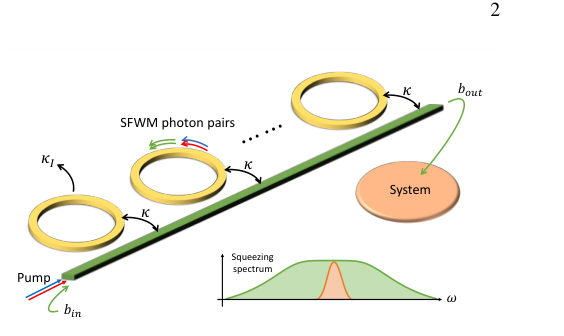
<figcaption class="paper-figure-caption"><b>Fig 1.</b> FIG. 1. Schematic plot of the cascaded ring-resonator architecture. N microrings is coupled to a common waveguide at a uniform rate κ, and to the environment at a rate κI. Spontaneous four-wave mixing creates degenerate photon pairs within each ring, denoted as para- metric interaction iξk</figcaption>
</figure>
<figure class="paper-figure-card">
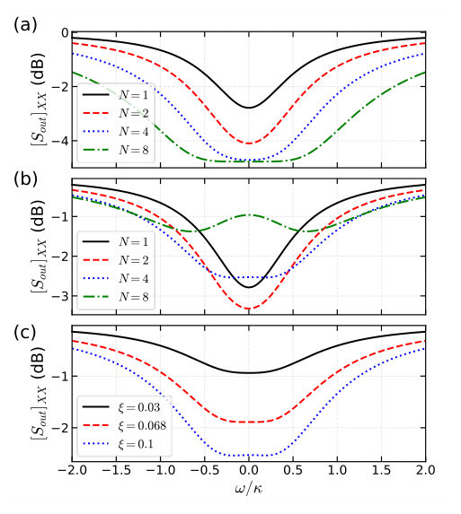
<figcaption class="paper-figure-caption"><b>Fig 2.</b> FIG. 2. Output X-quadrature squeezing spectra for a cascade of res- onant microrings (δk = 0) with uniform intrinsic loss κI = 0.1κ. (a) Uniform pump strength (ξk = ξ = 0.1κ) evaluated across vari- ous cascade lengths N. As N increases, the cumulative parametric interaction forms a flat, asymptotic squeezing plateau. (b) Spectra under realistic geometric pump attenuation (ξk = rk−1ξ) for various N, utilizing the same initial pump strength ξ = 0.1κ. The spatially varying pump profile degrades the plateau into a sharp central dip at ω = 0. (c) Optimization of the depleted-pump cascade for a fixed length of N = 4 under various initial pump strengths ξ. By tuning the pump near the...</figcaption>
</figure>
<figure class="paper-figure-card">
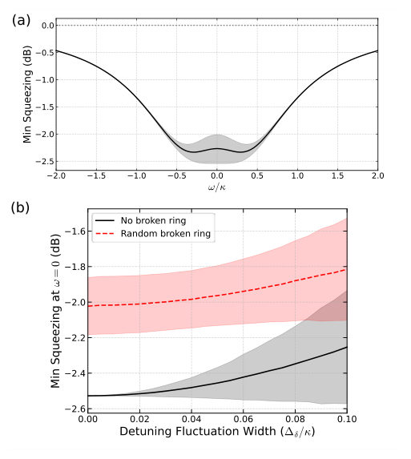
<figcaption class="paper-figure-caption"><b>Fig 3.</b> FIG. 3. Cascaded source against fabrication disorder and broken ring. (a) Average and standard deviation of the principal squeezed spectrum for N = 4, ξ = κI = 0.1κ, evaluated over an ensem- ble of Gaussian random frequency shifts with a standard deviation of ∆δ = 0.1κ. Although the disorder impacts the squeezing depth near resonance, the overall flatness of the broadband plateau is preserved. (b) Resonant squeezing magnitude (average and standard deviation) as a function of the frequency fluctuation width ∆δ. All other param- eters are the same. We also compare the performance under severe defect scenario in which a randomly selected ring is broken. Even under the combined degradation of a...</figcaption>
</figure>
<figure class="paper-figure-card">
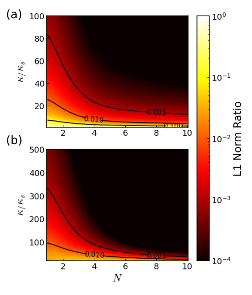
<figcaption class="paper-figure-caption"><b>Fig 4.</b> FIG. 4. Color map of the ratio RN as a function of the cascade length N and the source-to-target linewidth ratio κ/κs. The reservoir per- formance is evaluated for a target (a) near resonance δ = κs and at (b) far detuning δ = 20κs. The ratio of intrinsic loss and pump strength are fixed at κI/κ = 0.2 and ξ/κ = 0.1, respectively. The spectrum is analytically continued to continuous N to smoothly visu- alize the parameter scaling. The significant reduction in the required linewidth ratio κ/κs at larger N illustrates how the flat-topped cas- caded cavities relaxes the extreme bandwidth constraints needed to reach an ideal Markovian response.</figcaption>
</figure>
</div>

<p><strong>Summary.</strong> The paper proposes using an array of coupled micro-ring resonators to generate broadband squeezed vacuum states. By analyzing the system's spectral response, the authors demonstrate that this cascaded architecture overcomes the bandwidth/depth trade-off inherent in single cavities. This provides a practical and robust method for engineering high-quality quantum light sources on integrated photonic platforms.</p>
<p><strong>Why it may be interesting.</strong> This work provides a concrete, scalable engineering blueprint for quantum light sources. The ability to relax stringent low-$Q$ constraints by distributing the squeezing process across multiple, moderately pumped elements is highly relevant for integrated quantum photonics and cavity QED applications.</p>
<details>
<summary>Detailed structure</summary>
<p><strong>Main problem.</strong> The primary challenge is generating broadband optical squeezing that functions as a Markovian reservoir, overcoming the inherent trade-off between squeezing depth and spectral bandwidth in single-cavity sources.</p>
<p><strong>Main result.</strong> A cascaded micro-ring resonator architecture can generate a flat-topped, broadband squeezed spectrum that rapidly approaches the ideal Markovian limit, significantly outperforming single-cavity designs.</p>
<p><strong>Method.</strong> The analysis uses coupled Langevin equations and transfer matrices in the frequency domain to calculate the output squeezing spectrum ($    ext{Sout}(\omega)$) by modeling the system as a chain of $N$ parametrically pumped resonators.</p>
<p><strong>Model / system.</strong> The physical platform is a cascade of $N$ micro-ring resonators coupled to a bus waveguide. The dynamics are governed by analyzing the output field's two-time correlation function, which determines the squeezing spectrum.</p>
<p><strong>Key observables.</strong> Squeezing spectrum ($  ext{Sout}(\omega)$), Markovianity ratio ($R_N$), and the required source bandwidth for achieving a target level of squeezing.</p>
<p><strong>Important parameters / regimes.</strong> Number of rings ($N$), intrinsic loss ratio ($\kappa_I/\kappa$), pump strength ($\xi_k$), and detuning ($\delta_k$).</p>
<p><strong>Assumptions / limitations.</strong> The analysis often focuses on the XX component of the output spectral matrix, which is sufficient for characterizing linear dipole interactions with downstream systems. The final comparison uses a Markovianity ratio ($R_N$) to quantify deviation from ideal behavior.</p>
<p><strong>Figures summary.</strong> Figures illustrate the schematic architecture (Fig 1), show X-quadrature squeezing spectra comparing uniform vs. optimized pumping (Fig 2), and quantitatively compare the non-Markovianity ratio ($R_N$) versus cascade length $N$ for different target detunings (Fig 4).</p>
<p><strong>Paper structure.</strong> The paper progresses from defining the problem (squeezing limitations) to developing a theoretical model using coupled resonators, deriving spectral expressions, demonstrating robustness against imperfections, and finally quantifying the advantage of the cascade structure by comparing Markovianity convergence rates.</p>
</details>
<details>
<summary>Abstract</summary>
<p>Broadband squeezed light functioning as a Markovian reservoir can exponentially enhance light-matter interactions, benefiting quantum technologies. However, conventional single-cavity sources face a trade-off between squeezing depth and spectral bandwidth. We propose a scalable scheme for generating broadband squeezed vacuum using a cascade of parametric microring resonators coupled to a common bus waveguide. By analyzing the output, we identify the specific conditions that yield a broad, flat-topped squeezing spectrum, even under realistic intracavity pump attenuation. We demonstrate that this architecture is robust against fabrication imperfections, including inhomogeneous resonator frequencies and component failures. We show that the flat-topped spectrum converges to the Markovian limit significantly faster than a single-cavity Lorentzian profile. An array of as few as $N=5$ coupled resonators with an intrinsic loss ratio of $κ_I/κ= 0.1$ reduces the required bandwidth to a quarter of that needed by a single cavity to achieve same squeezing. This rapid convergence relaxes the low-$Q$ and high-gain constraints of single broadband cavities, distributing the squeezing process across moderately pumped resonators to provide a practical route for engineering squeezed reservoirs on mature integrated photonic platforms.</p>
</details>
<p><sub><a href="#top">↑ back to top</a></sub></p>

<p><a id="paper-2607.27392"></a></p>
<h3 id="anomalous-microwave-response-in-ybco-resonators-beyond-the-two-level-system-model"><a href="http://arxiv.org/abs/2607.27392v1">Anomalous Microwave Response in YBCO Resonators beyond the Two-Level-System Model</a></h3>
<p><strong>Authors:</strong> Kaiwen Zheng, Nathan J. Johnson, Nathan T. Thobaben, Sidharth Duthaluru, Haochen Shen, Denae T. Cherry, David S. Wisbey, Kater W. Murch<br>
<strong>Type:</strong> experiment · <strong>Category:</strong> strongly correlated electrons · <strong>PDF:</strong> <a href="https://arxiv.org/pdf/2607.27392v1">https://arxiv.org/pdf/2607.27392v1</a><br>
<strong>Analysis basis:</strong> full PDF text, analyzed in chunks
<strong>Topic relevance:</strong> <code>correlated / nonlocal dissipation</code> <strong>3/5</strong> · <code>Kondo &amp; dissipative impurity</code> <strong>2/5</strong> · <code>Keldysh / 2PI / non-Gaussian methods</code> <strong>1/5</strong> · <code>driven-dissipative phase transition</code> <strong>1/5</strong> · <code>methods for driven-dissipative</code> <strong>1/5</strong> · <code>spintronics-quantum-optics interface</code> <strong>1/5</strong></p>
<div class="figure-strip-hint">↔ Scroll figures horizontally</div>
<div class="paper-figures-scroll">
<figure class="paper-figure-card">
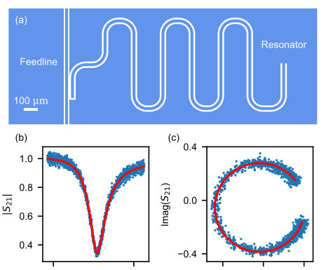
<figcaption class="paper-figure-caption"><b>Fig 1.</b> FIG. 1. Microwave response of a single resonator. (a) Layout of a single CPW resonator. The microwave signal travels through the feedline capacitively coupled to individ- ual CPW resonators. (b) Typical |S21| vs. frequency of a resonator, measured at −130 dBm drive power. The red line shows the best fit to the data. (c) The real vs. the imaginary part of the same S21 data. The red line shows the best circle fit to the raw data.</figcaption>
</figure>
<figure class="paper-figure-card">
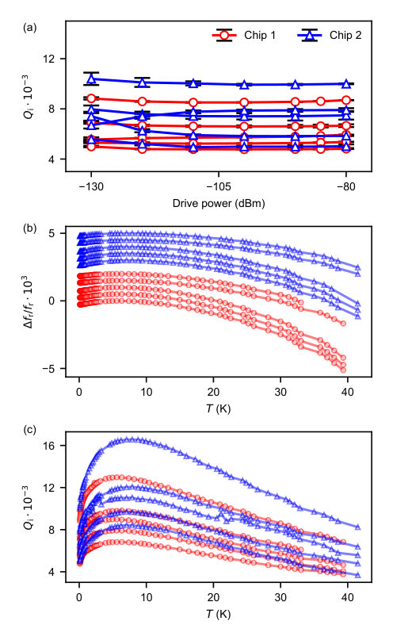
<figcaption class="paper-figure-caption"><b>Fig 2.</b> FIG. 2. Characterization of all the resonators. (a) Power dependence of Qi of all resonators of chip 1 (S-type film) and chip 2 (M-type film). Data points of the same res- onator are connected with solid lines. (b) Temperature de- pendence of ∆fr/fr of all resonators measured at -80 dBm. The error bars are smaller than the size of the markers. A temperature-independent offset is added to each resonator for clarity. (c) Temperature dependence of Qi of all resonators measured at -80 dBm.</figcaption>
</figure>
<figure class="paper-figure-card">
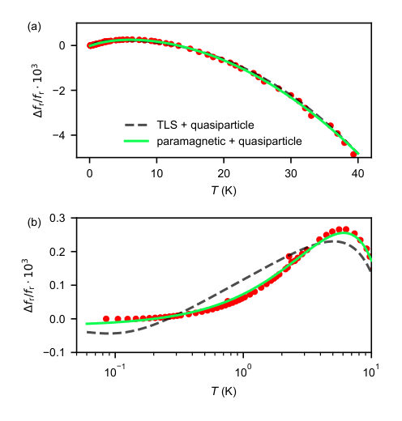
<figcaption class="paper-figure-caption"><b>Fig 3.</b> FIG. 3. Analysis of the temperature dependence of resonator frequency shift. (a) Temperature dependence of ∆fr/fr of a representative resonator fitted to the TLS + quasiparticle model (Eqs. 2, 3, 4, 5) and paramagnetic re- sponse + quasiparticle model (Eqs. 3, 5, 6). (b) Zoom in plot in the low temperature region revealing the different behavior of the two models.</figcaption>
</figure>
<figure class="paper-figure-card">
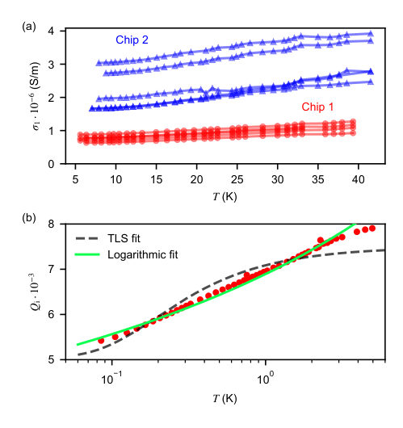
<figcaption class="paper-figure-caption"><b>Fig 4.</b> FIG. 4. Analysis of the temperature dependence of the intrinsic quality factor. (a) Effective σ1 of all resonators in the high temperature regime. (b) Temperature dependence of Qi of a representative resonator at low temperature fitted to Eq. 10 and 11.</figcaption>
</figure>
</div>

<p><strong>Summary.</strong> The authors measured the microwave response of YBCO resonators at very low temperatures to study superconducting dissipation. They found that while some behavior resembles Two-Level Systems, the data requires an additional paramagnetic contribution for frequency shifts and exhibits a residual loss following a logarithmic temperature dependence. This suggests that the underlying physics is more complex than standard TLS models predict.</p>
<p><strong>Why it may be interesting.</strong> This work directly probes superconducting gap physics and dissipation mechanisms in high-temperature superconductors, which are central topics in strongly correlated electron systems. The failure of standard models highlights the complexity of low-energy excitations near quantum critical points or disorder-induced states.</p>
<details>
<summary>Detailed structure</summary>
<p><strong>Main problem.</strong> The study aims to characterize the anomalous microwave response of YBCO resonators at low temperatures, specifically demonstrating that conventional Two-Level-System (TLS) models fail to explain the observed frequency shift and loss.</p>
<p><strong>Main result.</strong> The low-temperature frequency upturn is better described by an additional paramagnetic contribution from local moments or Andreev bound states, while the residual loss follows a logarithmic temperature dependence with an unknown microscopic origin.</p>
<p><strong>Method.</strong> Microwave characterization of coplanar-waveguide (CPW) resonators fabricated from YBCO thin films, measuring intrinsic quality factor ($Q_i$) and resonance frequency shift ($\Delta f_r/f_r$) across temperatures from 70 mK to 40 K.</p>
<p><strong>Model / system.</strong> The physical system is a superconducting film (YBCO) patterned into CPW resonators. The analysis compares experimental data against theoretical models, including the Two-Level-System (TLS) model and paramagnetic response models derived from local moments or Andreev bound states.</p>
<p><strong>Key observables.</strong> Intrinsic quality factor ($Q_i$), fractional resonance frequency shift ($\Delta f_r/f_r$), microwave power dependence of $Q_i$, and temperature dependence of loss.</p>
<p><strong>Important parameters / regimes.</strong> Temperature range (70 mK to 40 K), characteristic energy scales related to the resonator frequency, and fit parameters describing paramagnetic or TLS contributions.</p>
<p><strong>Assumptions / limitations.</strong> The analysis assumes that the observed low-temperature behavior can be modeled by combining quasiparticle loss with either a TLS contribution or a paramagnetic contribution; however, it notes limitations in these assumptions.</p>
<p><strong>Figures summary.</strong> Figures illustrate resonator layouts and $|S_{21}|$ measurements. Key plots show temperature dependence of $Q_i$ and $\Delta f_r/f_r$, comparing fits from the standard TLS model against those incorporating paramagnetic or logarithmic dependencies.</p>
<p><strong>Paper structure.</strong> The paper proceeds by presenting microwave measurements across a wide temperature range, analyzing the data to rule out simple models (like pure TLS), proposing alternative physical mechanisms (paramagnetic response) for frequency shifts, and finally identifying an unresolved logarithmic loss channel.</p>
</details>
<details>
<summary>Abstract</summary>
<p>We report the microwave response of coplanar-waveguide (CPW) resonators fabricated from $\mathrm{YBa_2Cu_3O_{7-δ}}$ (YBCO) thin films over temperatures from approximately $70~\mathrm{mK}$ to $40~\mathrm{K}$. The resonators exhibit internal quality factors $Q_\mathrm{i}$ in the range of $4\times10^3$ to $10^4$ at 70 mK, which increase to a maximum of approximately $8\times10^3$ to $1.2\times10^4$ near $6~\mathrm{K}$. At low temperatures, both $Q_\mathrm{i}$ and the fractional shift of the resonance frequency $Δf_\mathrm{r}/f_\mathrm{r}$ increases with temperature, qualitatively resembling behavior commonly associated with two-level-system (TLS) defects. However, neither response saturates on the temperature scale set by the resonator frequency, and the loss exhibits no observable microwave-power dependence. We show that low-temperature frequency upturn may be better described by an additional paramagnetic response associated with defect-induced local moments or Andreev bound states, while the low-temperature loss follows an approximately logarithmic temperature dependence whose microscopic origin remains unresolved. These measurements establish the millikelvin performance of patterned YBCO resonators and show that their low-temperature response cannot be understood within the conventional TLS framework alone.</p>
</details>
<p><sub><a href="#top">↑ back to top</a></sub></p>

<p><a id="paper-2607.28383"></a></p>
<h3 id="counterdiabatic-driving-under-variational-frame-dressing"><a href="http://arxiv.org/abs/2607.28383v1">Counterdiabatic Driving under Variational Frame Dressing</a></h3>
<p><strong>Authors:</strong> Boxi Li, Franco Nori, Felix Motzoi<br>
<strong>Type:</strong> theory · <strong>Category:</strong> quantum information and computing · <strong>PDF:</strong> <a href="https://arxiv.org/pdf/2607.28383v1">https://arxiv.org/pdf/2607.28383v1</a><br>
<strong>Analysis basis:</strong> full PDF text, analyzed in chunks
<strong>Topic relevance:</strong> <code>methods for driven-dissipative</code> <strong>3/5</strong> · <code>non-equilibrium dynamics</code> <strong>2/5</strong> · <code>Keldysh / 2PI / non-Gaussian methods</code> <strong>1/5</strong> · <code>analog quantum simulation</code> <strong>1/5</strong> · <code>correlated / nonlocal dissipation</code> <strong>1/5</strong> · <code>driven-dissipative phase transition</code> <strong>1/5</strong></p>
<div class="figure-strip-hint">↔ Scroll figures horizontally</div>
<div class="paper-figures-scroll">
<figure class="paper-figure-card">
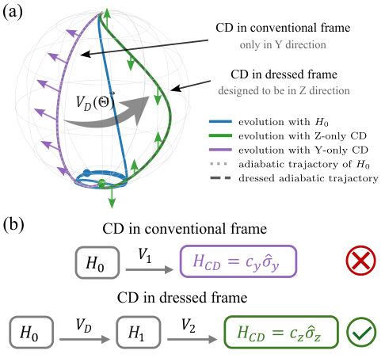
<figcaption class="paper-figure-caption"><b>Fig 1.</b> FIG. 1. Overview of the dressed CD protocol. (a) For a Landau-Zener problem, conventional CD requires an addi- tional Y -only correction, whereas dressed CD realizes it with an accessible Z-only control. The curves show the evolution trajectories, and the arrows indicate the control direction. The variational dressed-frame transformation VD(⃗Θ) reshapes the effective Hamiltonian and the adiabatic eigenstate trajec- tory. (b) Conventional CD works directly with H0. Dressed CD instead introduces a dressed Hamiltonian H1, from which an implementable correction is constructed.</figcaption>
</figure>
<figure class="paper-figure-card">
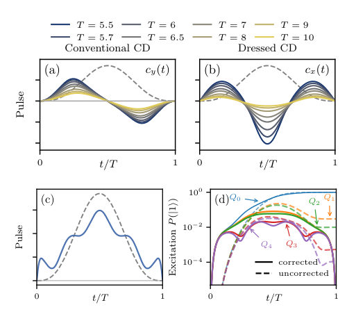
<figcaption class="paper-figure-caption"><b>Fig 2.</b> FIG. 2. (a,b) Single-qubit dressed CD for a single spec- tator: (a) conventional Y -only CD coefficient cy(t) and (b) dressed X-only correction cx(t) at different pulse durations T (given in the unit of 1/∆1), with the gray dashed curve showing the bare drive Ω(t) at T = 7. (c,d) Multi-spectator generalization at T = 10: (c) numerically constructed ex- act solution and (d) population dynamics for four spectators (∆j = {1.0, −1.1, 1.9, −2.05}) and one target qubit (∆0 = 0), where dashed lines show the bare dynamics and solid lines the dressed-CD corrected evolution. The target qubit undergoes a π pulse while all spectators remain in |0⟩after correction.</figcaption>
</figure>
<figure class="paper-figure-card">
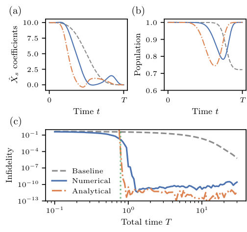
<figcaption class="paper-figure-caption"><b>Fig 3.</b> FIG. 3. Accelerated Bell-state preparation using an X- only dressed CD. In all panels, the gray dashed, blue solid, and orange dash-dotted curves denote the baseline drive and the variational dressed-CD protocols solved numerically and analytically, respectively. (a) Implemented X pulse at T = 2. (b) Instantaneous ground-state population. (c) Final error versus total time T. The dotted vertical line marks the ideal entangling limit π/(4|J|).</figcaption>
</figure>
<figure class="paper-figure-card">
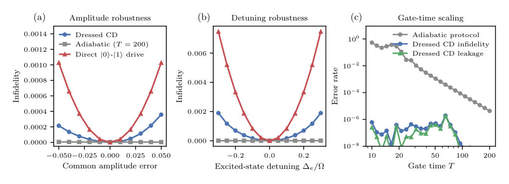
<figcaption class="paper-figure-caption"><b>Fig 4.</b> FIG. 4. Tripod holonomic gate under the native-control constraint. (a) Common rescaling of all tripod legs at fixed T = 25. (b) Excited-state detuning at the same T. In both cases the dressed-frame protocol follows the robustness trend of the adiabatic holonomic loop and remains well below the external direct |0⟩-|1⟩benchmark. (c) Gate-time scaling of the bare and dressed protocols. The bare loop reaches high fidelity only in the deeply adiabatic regime, whereas the dressed-frame correction keeps both the total error and the leakage close to the numerical accuracy.</figcaption>
</figure>
</div>

<p><strong>Summary.</strong> The paper introduces a Variational Frame Dressing approach to Counterdiabatic Driving, overcoming limitations where required controls are physically unavailable. By reformulating the problem in an augmented 'dressed frame,' it derives implementable control fields for accelerating quantum gates and protocols. This offers a systematic, nonperturbative framework superior to conventional adiabatic methods.</p>
<p><strong>Why it may be interesting.</strong> This work provides a powerful generalization of quantum control theory for open systems, offering concrete techniques to design fast gates that respect hardware constraints by leveraging auxiliary degrees of freedom in the dressed frame.</p>
<details>
<summary>Detailed structure</summary>
<p><strong>Main problem.</strong> The challenge is accelerating adiabatic quantum protocols while ensuring that the required control fields are physically implementable using only native laboratory controls.</p>
<p><strong>Main result.</strong> A variational dressed-frame formalism provides a systematic, nonperturbative method to construct implementable counterdiabatic driving protocols inaccessible via conventional methods.</p>
<p><strong>Method.</strong> The authors derive and solve a dressed-frame commutator equation by introducing an unconstrained auxiliary generator ($A_D$) and minimizing the residual of this equation variationally over finite operator bases.</p>
<p><strong>Model / system.</strong> The method is tested on three systems: multi-qubit chains for spectator error suppression, two-qubit Bell state preparation using an Ising dimer Hamiltonian, and a four-level tripod manifold for holonomic gates.</p>
<p><strong>Key observables.</strong> Fidelity (Total, Subspace), Commutator Residual ($\lVert [	ext{G2}, H_1] 
Vert^2$), Population Dynamics.</p>
<p><strong>Important parameters / regimes.</strong> Gate time ($T$), detuning parameters ($\Delta e$, $\epsilon$), and the structure of native couplings.</p>
<p><strong>Assumptions / limitations.</strong> The method assumes that necessary control fields and virtual generators can be accurately represented by finite operator bases (e.g., Fourier or sine series).</p>
<p><strong>Figures summary.</strong> Figures compare conventional CD vs. dressed CD protocols, showing enhanced fidelity in Bell-state preparation and robust gate operation in the tripod manifold compared to bare drives.</p>
<p><strong>Paper structure.</strong> The paper establishes the general variational formalism via the dressed frame commutator equation, then applies this framework sequentially to three distinct physical models (multi-qubit chain, Bell state, tripod) to demonstrate its utility.</p>
</details>
<details>
<summary>Abstract</summary>
<p>Counterdiabatic (CD) driving accelerates adiabatic protocols by prescribing auxiliary control fields, but often fails to map them to physically available operations. We derive a general formalism for such a mapping. We formulate CD driving in a variational dressed frame, where an unconstrained auxiliary generator reshapes the effective adiabatic problem while simultaneously forcing the applied correction to stay restricted to the native laboratory controls. This yields a laboratory-frame commutator equation that can be solved without constructing instantaneous eigenstates or the adiabatic and dressed-frame unitaries. The additional dressed-frame freedom reveals solutions that are inaccessible in the conventional adiabatic frame. We illustrate this mechanism in three settings: suppression of spectator errors in a multi-qubit chain driven by a single quadrature, an analytical acceleration of adiabatic Bell-state preparation with a fixed entangling interaction, and implementation of a fast adiabatic holonomic gate in a degenerate tripod manifold with correction pulses confined to the native couplings. Our results provide a systematic nonperturbative framework for constructing implementable counterdiabatic protocols beyond the conventional adiabatic frame.</p>
</details>
<p><sub><a href="#top">↑ back to top</a></sub></p>

<p><a id="paper-2607.28231"></a></p>
<h3 id="quantum-arago-fresnel-interference-of-displaced-spin-states-of-photons"><a href="http://arxiv.org/abs/2607.28231v1">Quantum Arago-Fresnel interference of displaced spin states of photons</a></h3>
<p><strong>Authors:</strong> Yan Zhang, Xiang Liu, Hou Ian<br>
<strong>Type:</strong> theory · <strong>Category:</strong> other · <strong>PDF:</strong> <a href="https://arxiv.org/pdf/2607.28231v1">https://arxiv.org/pdf/2607.28231v1</a><br>
<strong>Analysis basis:</strong> full PDF text, analyzed in chunks
<strong>Topic relevance:</strong> <code>exotic spin models in light-matter</code> <strong>3/5</strong> · <code>interference shaping light</code> <strong>3/5</strong> · <code>analog quantum simulation</code> <strong>1/5</strong> · <code>quantum measurements</code> <strong>1/5</strong> · <code>spintronics-quantum-optics interface</code> <strong>1/5</strong></p>
<div class="figure-strip-hint">↔ Scroll figures horizontally</div>
<div class="paper-figures-scroll">
<figure class="paper-figure-card">
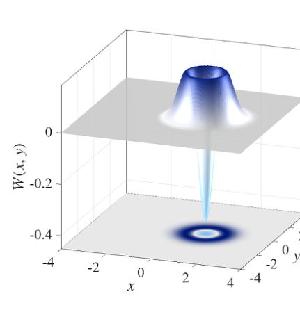
<figcaption class="paper-figure-caption"><b>Fig 1.</b> Fig. 1: Surface plot of the Wigner distribution W(x, y) against the quadratures x and y for a displaced spin state of displacement α = 1.0 and Bloch angles θ = π/2, ϕ = 0. The contour projected on xy-plane is also plotted. The distribution remains identical for displacing either from the left |⟲⟩or the right |⟳⟩photon spin.</figcaption>
</figure>
<figure class="paper-figure-card">
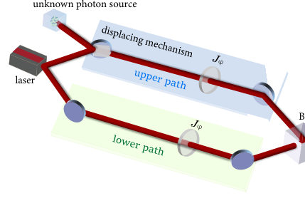
<figcaption class="paper-figure-caption"><b>Fig 2.</b> Fig. 2: Model setup of a quantum Arago-Fresnel interferometer. An incident photon with un- known</figcaption>
</figure>
<figure class="paper-figure-card">
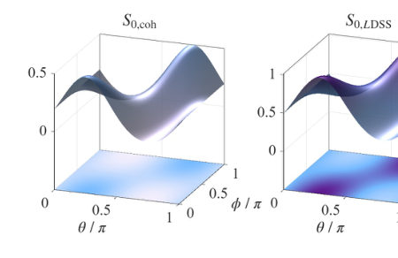
<figcaption class="paper-figure-caption"><b>Fig 3.</b> Fig. 3: (a) Surface plot overlaid with underneath contour of the Stokes parameter S0 for Arago- Fresnel (AF) self-interference of a coherent-state beam (acting as both the signal and the reference beams) of polarizing angles θ and ϕ . The plot aligns with our expectations with polarized beam behaviors in classical AF laws and serves as a reference baseline. (b) The same plot where the signal beam is in a left displaced spin state (DSS). (c) The same plot where the signal beam is in a right DSS. In all plots, the polarizer orientation is set to φ = 0 and the displacement of the coherent state is set to α = 1/2.</figcaption>
</figure>
<figure class="paper-figure-card">
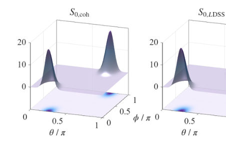
<figcaption class="paper-figure-caption"><b>Fig 4.</b> Fig. 4: Surface plots overlaid with underneath contours of the Stokes parameters (a) S0,coh, (b) S0,LDSS, and (c) S0,RDSS, i.e. the same plots as in Fig. 3, but with displacement α = 3 to indicate a stronger powered reference beam.</figcaption>
</figure>
</div>

<p><strong>Summary.</strong> The paper analyzes Arago-Fresnel interference using displaced single-photon spin states (DSS) and coherent light. By calculating the Stokes parameter, the authors show that the resulting interference fringes carry unique angular dependencies related to the photon's spin polarization. This establishes a purely optical quantum method for determining an unknown incident photon's spin.</p>
<p><strong>Why it may be interesting.</strong> This work bridges classical polarization optics with quantum photon statistics, providing a theoretical blueprint for measuring fundamental properties like photonic spin using linear optical elements.</p>
<details>
<summary>Detailed structure</summary>
<p><strong>Main problem.</strong> The paper re-investigates Arago-Fresnel interference using modern quantum descriptions to establish a purely optical method for determining the spin of an unknown incident photon.</p>
<p><strong>Main result.</strong> The Stokes parameter exhibits unique $(	heta, \phi)$-dependent fringe patterns when one beam is a displaced single-photon spin state (DSS), allowing discrimination between left and right spins via interferometry.</p>
<p><strong>Method.</strong> Calculations involve computing the expectation value of the Stokes parameter ($\langle\Sigma_0
angle$) for combined beams using quantum operator expansions and simplifying resulting infinite sums into closed-form exponential expressions.</p>
<p><strong>Model / system.</strong> The system models photon interference between a coherent state (displaced from vacuum) and a displaced single-photon spin state (DSS). Spin is treated using circular basis vectors ($|\circlearrowleft
angle, |\circlearrowright
angle$) in an Arago-Fresnel interferometer setup.</p>
<p><strong>Key observables.</strong> The zeroth Stokes parameter ($S_0 = \langle\Sigma_0
angle$), which measures the output photon count proportional to $\langle\Sigma_0
angle$.</p>
<p><strong>Important parameters / regimes.</strong> Photon spin angles $(	heta, \phi)$, polarizer orientation angle ($\varphi$), and coherent state displacement amplitude $|\alpha|$.</p>
<p><strong>Assumptions / limitations.</strong> The analysis relies on specific commutation relations and the use of approximations (like BCH expansion) to simplify complex sums involving creation/annihilation operators.</p>
<p><strong>Figures summary.</strong> Figures illustrate Wigner distributions for DSS, the quantum Arago-Fresnel interferometer setup, and surface plots showing $S_0$ variations for self-interference and DSS interference, highlighting spin dependence.</p>
<p><strong>Paper structure.</strong> The paper progresses by defining the physical model (DSS and coherent states), deriving the mathematical framework using operator expansions to calculate $\langle\Sigma_0
angle$, presenting closed-form results for different interference combinations, and finally demonstrating the spin-resolving capability of the setup.</p>
</details>
<details>
<summary>Abstract</summary>
<p>The four laws by Arago and Fresnel distinguish the coplanarity of two light beams to determine their capacity of interference, laying the historic milestone for conceptualizing the polarization of light. Equipped with modern descriptions of non-classical states, we re-investigate the macroscopic Arago-Fresnel interference producible by photon helicities. To this end, we compute the Stokes parameter of a polarized beam combined from a regular coherent state (displaced from the vacuum) and a displaced single-photon spin state (displaced from either a left- or right-spin state of photon). The spin orientation, together with its relative asymmetry with respect to the polarizing orientation of the displacing coherent state, produces distinguishing parameter dependences and thus distict interference fringes. Conversely, this quantum interferometry establishes a purely optical method to determine the spin of an unknown incident photon.</p>
</details>
<p><sub><a href="#top">↑ back to top</a></sub></p>

<p><a id="paper-2607.27466"></a></p>
<h3 id="coherent-excitation-of-a-two-state-system-by-a-lorentzian-field"><a href="http://arxiv.org/abs/2607.27466v1">Coherent excitation of a two-state system by a Lorentzian field</a></h3>
<p><strong>Authors:</strong> Aida Shiroyan, Genko S. Vasilev, Nikolay V. Vitanov<br>
<strong>Type:</strong> theory · <strong>Category:</strong> other · <strong>PDF:</strong> <a href="https://arxiv.org/pdf/2607.27466v1">https://arxiv.org/pdf/2607.27466v1</a><br>
<strong>Analysis basis:</strong> full PDF text, analyzed in chunks
<strong>Topic relevance:</strong> <code>Keldysh / 2PI / non-Gaussian methods</code> <strong>3/5</strong> · <code>non-equilibrium dynamics</code> <strong>2/5</strong> · <code>driven-dissipative phase transition</code> <strong>1/5</strong> · <code>methods for driven-dissipative</code> <strong>1/5</strong> · <code>non-equilibrium universality</code> <strong>1/5</strong></p>
<div class="figure-strip-hint">↔ Scroll figures horizontally</div>
<div class="paper-figures-scroll">
<figure class="paper-figure-card">
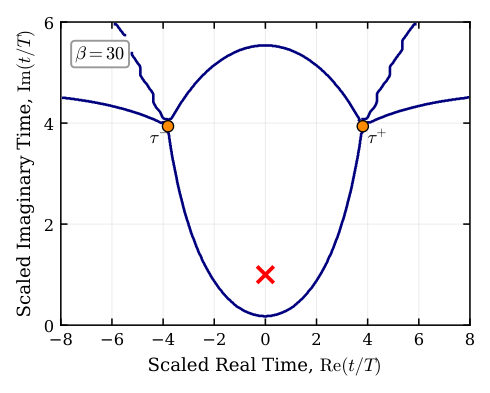
<figcaption class="paper-figure-caption"><b>Fig 1.</b> FIG. 1. Representative Stokes-line structure for the Lorentzian model at β = 30 in the upper half of the scaled complex-time plane t/T. The plotted curves are the numer- ical Stokes trajectories issuing from τ ±, obtained from the level-set condition Im R τ τ± E(τ ′) dτ ′ = const on the physical sheets. The two transition points lie on the dominant Stokes manifold relevant to the generalized DDP interference. The Lorentzian pole at t/T = i is marked separately and must not be crossed by the analytic-continuation contours.</figcaption>
</figure>
<figure class="paper-figure-card">
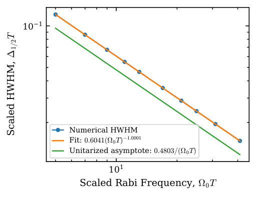
<figcaption class="paper-figure-caption"><b>Fig 2.</b> FIG. 3. Scaled positive half-width at half maximum ∆1/2T extracted from direct numerical Schr¨odinger integration for odd-π pulse areas and plotted against the scaled Rabi fre- quency Ω0T. The numerical fit, Eq. (51), has exponent −1.0001, confirming the inverse-α power-narrowing law. The unitarized asymptotic prediction 0.4803/α has the same ex- ponent but underestimates the numerical prefactor.</figcaption>
</figure>
<figure class="paper-figure-card">
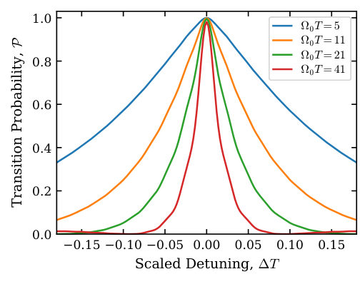
<figcaption class="paper-figure-caption"><b>Fig 3.</b> FIG. 2. Numerically integrated transition probability versus the scaled detuning ∆T for resonant odd-π Lorentzian pulses with scaled Rabi frequencies Ω0T = 5, 11, 21, and 41. The ex- act resonant probability is unity in every case, while the cen- tral excitation line narrows systematically as Ω0T increases.</figcaption>
</figure>
<figure class="paper-figure-card">
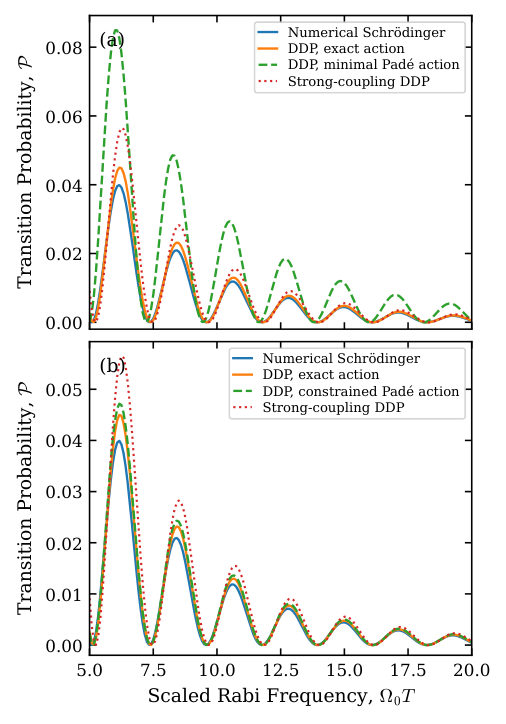
<figcaption class="paper-figure-caption"><b>Fig 4.</b> FIG. 4. Transition probability versus the scaled Rabi fre- quency Ω0T for the fixed scaled detuning ∆T = 1. Direct nu- merical integration of the Schr¨odinger equation is compared with the standard DDP probability evaluated using the ex- act contour action and Pad´e-approximated actions. Panel (a) shows the minimal [3/1] approximation, which reproduces the qualitative crossover but displays noticeable deviations in the envelope and phase. Panel (b) shows the constrained [4/2] approximation, whose curve nearly coincides with the exact- action DDP result throughout the displayed crossover and strong-coupling range. The two panels use the same vertical scale, and the leading strong-coupling...</figcaption>
</figure>
<figure class="paper-figure-card">
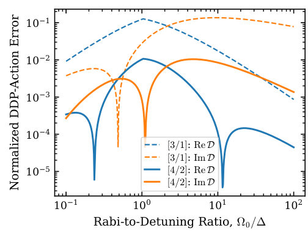
<figcaption class="paper-figure-caption"><b>Fig 5.</b> FIG. 5. Normalized errors ϵ[m/n] X of the real and imaginary parts of the Pad´e action ratio R+ = D(τ +)/(∆T), as defined in Eq. (69), versus the Rabi-to-detuning ratio Ω0/∆= β. Dashed curves show the minimal [3/1] approximation and solid curves show the constrained [4/2] approximation. The additional zero-coefficient constraints reduce the maximum error over 0.1 ≤β ≤100 from about 13% to about 1.1%.</figcaption>
</figure>
</div>

<p><strong>Summary.</strong> This paper analyzes how a two-state quantum system responds to an intense, Lorentzian-shaped laser pulse. It employs the sophisticated Dykhne-Davis-Pechukas (DDP) method to calculate the transition probability by analyzing complex time contours. The key finding is the derivation of power-narrowing behavior in the strong-coupling regime, providing deep insights into coherent quantum control.</p>
<p><strong>Why it may be interesting.</strong> This work provides advanced analytical techniques (DDP) for calculating quantum response functions under non-adiabatic driving fields, which is crucial for understanding ultrafast light-matter interactions in AMO physics.</p>
<details>
<summary>Detailed structure</summary>
<p><strong>Main problem.</strong> The study focuses on calculating the coherent excitation probability of a two-state quantum system driven by an external field with a Lorentzian temporal envelope.</p>
<p><strong>Main result.</strong> The analysis successfully derives asymptotic expressions for the transition probability, demonstrating power-narrowing behavior in the strong-coupling limit. The DDP method provides a robust framework to bypass difficulties associated with connecting special function solutions.</p>
<p><strong>Method.</strong> The primary theoretical tool is the Dykhne-Davis-Pechukas (DDP) description, which uses complex contour integration over adiabatic energy splittings to determine the transition amplitude.</p>
<p><strong>Model / system.</strong> The system is a simple two-state quantum oscillator governed by a time-dependent Hamiltonian. The driving field is modeled as having a Lorentzian temporal envelope ($\Omega(t) \propto 1/(1+t^2/T^2)$) and constant detuning ($\Delta$).</p>
<p><strong>Key observables.</strong> Transition probability ($P = |c_2(+\infty)|^2$), oscillation phase, and oscillation envelope.</p>
<p><strong>Important parameters / regimes.</strong> The pulse area ($\alpha = \Omega_0 T$) and the ratio of Rabi frequency to detuning ($eta = \Omega_0/\Delta$).</p>
<p><strong>Assumptions / limitations.</strong> The analysis relies on the DDP approximation and assumes an ideal Lorentzian pulse shape; it also compares results derived from Padé approximants against the exact action integral.</p>
<p><strong>Figures summary.</strong> Figures illustrate the Stokes-line structure in the complex-time plane, showing transition points and poles related to the Lorentzian profile. Comparison plots show the convergence of different approximation methods (e.g., constrained [4/2] vs minimal [3/1]) against the exact DDP result.</p>
<p><strong>Paper structure.</strong> The paper develops the problem by first mapping the dynamics to a confluent Heun equation, then pivots to using the DDP method for the transition probability. It systematically analyzes the DDP action in weak and strong coupling limits, comparing results with Padé approximants.</p>
</details>
<details>
<summary>Abstract</summary>
<p>We study the coherent excitation of a two-state quantum system by a field with a Lorentzian temporal envelope and constant carrier frequency. The associated differential equation admits an exact local representation in terms of confluent Heun functions. For the transition probability we develop a Dykhne-Davis-Pechukas (DDP) description based on the two relevant complex transition points and their interference. The DDP action is analyzed directly in the weak- and strong-coupling limits, yielding explicit asymptotic expressions for the oscillation phase, oscillation envelope, far-detuned line shape, and near-resonant behavior. In particular, the strong-coupling asymptotics imply a linewidth proportional to the inverse peak Rabi frequency for resonant odd-$π$ pulses, thereby exhibiting the power-narrowing characteristic of the Lorentzian pulse.</p>
</details>
<p><sub><a href="#top">↑ back to top</a></sub></p>

<p><a id="paper-2607.28369"></a></p>
<h3 id="performance-benchmarking-software-for-the-density-matrix-renormalization-group"><a href="http://arxiv.org/abs/2607.28369v1">Performance Benchmarking: Software for the Density Matrix Renormalization Group</a></h3>
<p><strong>Authors:</strong> Per Sehlstedt, Paolo Bientinesi, Lars Karlsson<br>
<strong>Type:</strong> theory · <strong>Category:</strong> numerical methods · <strong>PDF:</strong> <a href="https://arxiv.org/pdf/2607.28369v1">https://arxiv.org/pdf/2607.28369v1</a><br>
<strong>Analysis basis:</strong> full PDF text, analyzed in chunks
<strong>Topic relevance:</strong> <code>analog quantum simulation</code> <strong>3/5</strong> · <code>methods for driven-dissipative</code> <strong>3/5</strong> · <code>entanglement &amp; information structure</code> <strong>1/5</strong> · <code>non-equilibrium dynamics</code> <strong>1/5</strong></p>
<div class="figure-strip-hint">↔ Scroll figures horizontally</div>
<div class="paper-figures-scroll">
<figure class="paper-figure-card">
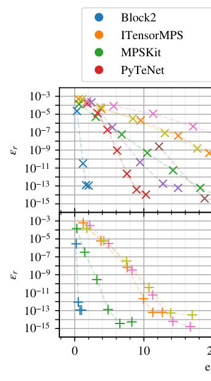
<figcaption class="paper-figure-caption"><b>Fig 1.</b> Figure 1: Performance of DMRG implementations on the transverse-field Ising model using a maximum bond dimension of 100. The top and bottom panels show trivial and Z2 symmetry enforcement, respectively. Markers mark the end of a full sweep, i.e., a forward and backward pass.</figcaption>
</figure>
<figure class="paper-figure-card">
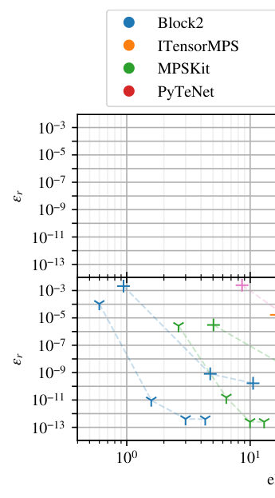
<figcaption class="paper-figure-caption"><b>Fig 2.</b> Figure 2: Performance of DMRG implementations on the isotropic spin-1 Heisenberg model using a maximum bond dimension of 400. The top and bot- tom panels show trivial and non-trivial symmetry enforcement, respectively. Markers mark the end of a full sweep, i.e., a forward and backward pass.</figcaption>
</figure>
<figure class="paper-figure-card">
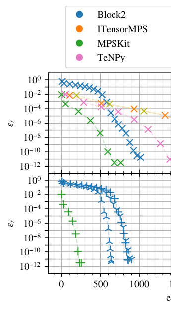
<figcaption class="paper-figure-caption"><b>Fig 3.</b> Figure 3: Performance of DMRG implementations on the Fermi–Hubbard model using a maximum bond dimension of 800. The top and bottom panels show the enforcement of abelian and non-abelian symmetries, respectively. Markers mark the end of a full sweep, i.e., a forward and backward pass.</figcaption>
</figure>
<figure class="paper-figure-card">
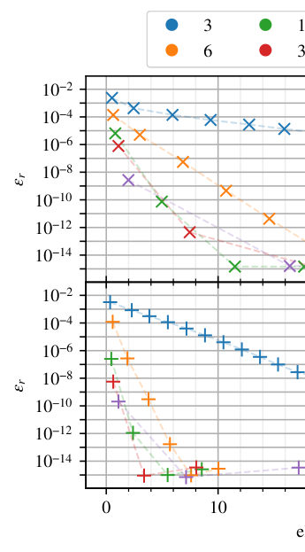
<figcaption class="paper-figure-caption"><b>Fig 4.</b> Figure 4: Performance of MPSKit on the transverse-field Ising model using different Krylov subspace dimensions.</figcaption>
</figure>
<figure class="paper-figure-card">
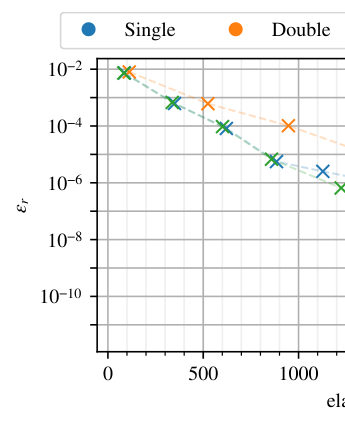
<figcaption class="paper-figure-caption"><b>Fig 5.</b> Figure 5: Performance of ITensorMPS on the Fermi–Hubbard model using three different floating-point precision strategies: single-precision only, double- precision only, and starting with single- and switching to double-precision after four sweeps. Because the single-precision Hamiltonian yields lower energy due to numerical imprecision, the single-precision result error is calculated as an absolute difference in eq. (11) rather than a linear one.</figcaption>
</figure>
</div>

<p><strong>Summary.</strong> This paper addresses the lack of standardized performance comparison in DMRG software by introducing a rigorous benchmarking framework. By applying this framework to multiple implementations, the authors quantify significant speed differences based on both the package used and how its parameters are configured. The work provides essential guidance for users and developers aiming to build more efficient quantum simulation tools.</p>
<p><strong>Why it may be interesting.</strong> This is highly relevant as AMO physics often relies on simulating complex quantum dynamics (e.g., molecular or spin systems) where computational bottlenecks limit accessible model sizes.</p>
<details>
<summary>Detailed structure</summary>
<p><strong>Main problem.</strong> The performance of scientific software, particularly for algorithms like DMRG, is critical as it dictates the scale of solvable quantum many-body problems.</p>
<p><strong>Main result.</strong> Rigorous benchmarking reveals significant and non-obvious performance differences (up to two orders of magnitude) among various DMRG implementations and parameter settings.</p>
<p><strong>Method.</strong> The authors present a dedicated, performance-oriented benchmarking framework applied to compare eight existing DMRG software implementations systematically.</p>
<p><strong>Model / system.</strong> The study focuses on the Density Matrix Renormalization Group (DMRG) algorithm used to simulate quantum systems. The underlying theory involves variational optimization using tensor network states like MPS/MPO representations for Hamiltonians.</p>
<p><strong>Key observables.</strong> Computational cost, end-to-end performance metrics, and solution quality (convergence/accuracy).</p>
<p><strong>Important parameters / regimes.</strong> Bond dimension ($\chi$), parameter configuration settings, update modes, eigensolver tolerances, and hardware environment.</p>
<p><strong>Assumptions / limitations.</strong> The primary assumption is that systematic, standardized benchmarking is necessary because existing evaluations are often incomplete or lack direct performance comparison metrics.</p>
<p><strong>Paper structure.</strong> The paper introduces the necessity for systematic benchmarking in DMRG software, details the proposed framework, applies it to compare multiple implementations across various parameter settings, and concludes by emphasizing the value of rigorous evaluation for future development.</p>
</details>
<details>
<summary>Abstract</summary>
<p>The performance of scientific software often determines the scale of problems that can be solved in practice. As multiple implementations of the same algorithm emerge, systematic evaluation is needed to compare their strengths and limitations. The density matrix renormalization group (DMRG) algorithm, widely used to study quantum systems, has over 50 software implementations. These implementations vary in multiple aspects that can strongly affect performance. However, despite the need, performance evaluations of these implementations are scarce and lack a consistent standard; many existing evaluations are either too incomplete to enable meaningful comparisons or focus on objectives other than direct performance comparisons, thereby limiting understanding of how the implementations compare. Here, we present a performance-oriented benchmarking framework to facilitate meaningful comparisons of DMRG implementations, and we apply it to quantify the performance of eight implementations, highlighting similarities and differences among them. Furthermore, we examine multiple parameter settings, optimization strategies, and implementation-specific features to demonstrate how parameter configuration can affect performance and how systematic evaluation can reveal non-obvious trade-offs. The results show significant performance differences, up to two orders of magnitude in some cases, not only between different implementations when aligning parameters, but also within the same implementation when comparing different parameter configurations. Hence, our results demonstrate the significant value and insight that can be gained from conducting rigorous performance evaluations. Using our results and framework as a starting point, more rigorous benchmarking will ultimately help users and developers make informed decisions and support future development efforts to build better, more efficient software.</p>
</details>
<p><sub><a href="#top">↑ back to top</a></sub></p>

<p><a id="paper-2607.27492"></a></p>
<h3 id="extended-s-wave-superconductivity-in-m-point-twisted-bilayer-snse2"><a href="http://arxiv.org/abs/2607.27492v1">Extended s-wave superconductivity in M-point twisted bilayer SnSe2</a></h3>
<p><strong>Authors:</strong> Lennart Klebl, Ammon Fischer, Salahudin V. Smailagić, Ming-Rui Li, Henning Schlömer, Haoyu Hu, B. Andrei Bernevig, Dante M. Kennes, Ronny Thomale<br>
<strong>Type:</strong> theory · <strong>Category:</strong> strongly correlated electrons · <strong>PDF:</strong> <a href="https://arxiv.org/pdf/2607.27492v1">https://arxiv.org/pdf/2607.27492v1</a><br>
<strong>Analysis basis:</strong> full PDF text, analyzed in chunks
<strong>Topic relevance:</strong> <code>Keldysh / 2PI / non-Gaussian methods</code> <strong>3/5</strong> · <code>analog quantum simulation</code> <strong>3/5</strong> · <code>methods for driven-dissipative</code> <strong>1/5</strong></p>
<div class="figure-strip-hint">↔ Scroll figures horizontally</div>
<div class="paper-figures-scroll">
<figure class="paper-figure-card">
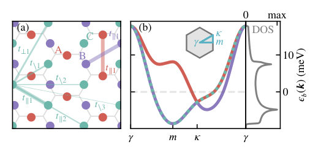
<figcaption class="paper-figure-caption"><b>Fig 1.</b> FIG. 1. Wannier centers, hopping parameters (a), and band struc- ture (b) of 𝜃= 6.01◦twisted bilayer SnSe2 in AB stacking configura- tion. We visualize the hopping parameters for the C valley as green lines with thickness encoding strength, see Table S1.1 for numerical values. The hoppings for 𝜂= A, B follow from 𝐶3𝑧rotation, as in- dicated by the dominant hopping 𝑡∥1. The Wannier centers (dots) are located approximately on the three Kagome sites in the Wigner-Seitz cell (light gray hexagons) The bands in panel (b) are colored accord- ing to their valley content (𝜂= C dotted for visibility) and shown along the irreducible path indicated in the inset. The dashed gray line indicates the...</figcaption>
</figure>
<figure class="paper-figure-card">
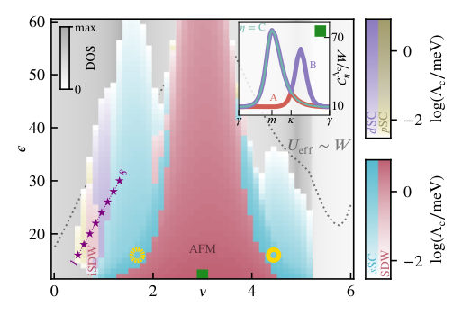
<figcaption class="paper-figure-caption"><b>Fig 2.</b> FIG. 2. Phase diagram of 𝜃= 6.01◦AB-stacked tSnSe2 obtained by functional renormalization group simulations. We plot the criti- cal scale Λc, which qualitatively resembles a critical temperature, as a function of electron filling 𝜈and dielectric constant 𝜖. We find various regions of distinct phases: An intravalley antiferromagnet (AFM, ma- genta), an adjacent extended 𝑠-wave superconductor (𝑠SC, blue, yel- low circle), 𝑝- and 𝑑-wave superconductivity (𝑝SC, olive and 𝑑SC, purple, respectively; purple stars), and incommensurate intravalley magnetism (iSDW, magenta). The regions without coloring corre- spond to Fermi liquid behavior (i.e., no divergence within the FRG) and show the...</figcaption>
</figure>
<figure class="paper-figure-card">
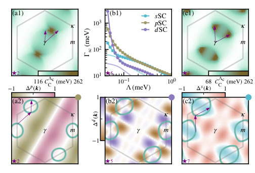
<figcaption class="paper-figure-caption"><b>Fig 3.</b> FIG. 3. Weak-coupling superconductivity in 𝜃= 6.01◦AB-stacked tSnSe2 (cf. purple stars in Fig. 2, counted left-to-right). Panel (a1) dis- plays the spin fluctuation vertex (at the second purple star in Fig. 2) from FRG as a function of transfer momentum 𝒒for valley 𝜂= C, with relevant transfer momenta given by the purple arrows. The re- sulting superconducting gap amplitude is given in panel (a2). The leading spin fluctuation vectors (purple) connect parts of the Fermi surface (green circles) where the sign of the superconducting gap Δ𝑝(𝒌) changes. Panels (c1,c2) show the same analysis but for the weak-coupling extended 𝑠-wave case (seventh purple star in Fig. 2). For fillings in between...</figcaption>
</figure>
<figure class="paper-figure-card">
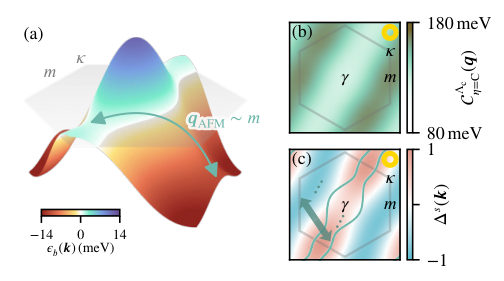
<figcaption class="paper-figure-caption"><b>Fig 4.</b> FIG. 4. Microscopic pairing mechanism for extended 𝑠-wave super- conductivity in 𝜃= 6.01◦AB-stacked tSnSe2. Panel (a) illustrates the dominant AFM spin fluctuations’ origin starting from the non- interacting band structure (shown as colored three-dimensional sur- face for valley 𝜂= C, with the Fermi level being white). The green arrow sketches the leading off-shell magnetic scattering, which ex- presses transfer momenta located in a strip parallel to the Fermi sur- face (containing 𝒒AFM ∼𝑚); panel (b) shows the -channel vertex’ structure (for 𝜈= 4.44 and 𝜖= 16; golden circle in Fig. 2) in the Bril- louin zone, where the brown regions contain 𝒒AFM ∼𝑚. In panel (c) we plot the C-valley...</figcaption>
</figure>
</div>

<p><strong>Summary.</strong> This theoretical work analyzes correlated electronic states and unconventional superconductivity in twisted bilayer SnSe2 using the Functional Renormalization Group method. By modeling interactions within an interacting Wannier framework, the authors map out a phase diagram showing how doping tunes the superconducting pairing symmetry. The findings establish this moiré material as a promising platform for studying physics analogous to iron pnictides.</p>
<p><strong>Why it may be interesting.</strong> While focused on solid-state physics, the use of advanced many-body techniques like FRG to map out competing ordered phases (superconductivity vs. magnetism) in a tunable moiré lattice is highly relevant for understanding emergent quantum phenomena in engineered systems.</p>
<details>
<summary>Detailed structure</summary>
<p><strong>Main problem.</strong> The study investigates the emergence of electronic order and unconventional superconductivity in M-valley moiré materials.</p>
<p><strong>Main result.</strong> The system exhibits a complex phase diagram where doping controls the superconducting pairing symmetry, stabilizing an extended s-wave state analogous to iron pnictide superconductors near optimal doping levels.</p>
<p><strong>Method.</strong> Functional Renormalization Group (FRG) simulations are employed to analyze correlation effects arising from long-ranged Coulomb interactions in the interacting Wannier model.</p>
<p><strong>Model / system.</strong> The system is based on an AB-stacked twisted SnSe2, modeled via a first-principles Wannier Hamiltonian incorporating a dual-gated screened Coulomb repulsion. The analysis focuses on electronic instabilities driven by doping ($
u$) and interaction strength.</p>
<p><strong>Key observables.</strong> Superconducting order parameter symmetry (s-, p-, d-wave), antiferromagnetic ordering, critical correlation scales ($\Lambda_c$), and pairing susceptibilities.</p>
<p><strong>Important parameters / regimes.</strong> Doping concentration ($
u \approx 1, 2, 3, 4$); twist angle ($ heta=6.01^\circ$); interaction strength ($\epsilon$).</p>
<p><strong>Assumptions / limitations.</strong> The analysis restricts the interaction Hamiltonian to density-density terms because non-trivial elements are energetically suppressed; FRG calculations use specific truncations (e.g., TUFRG, IOBI).</p>
<p><strong>Figures summary.</strong> Figures illustrate band structures and Fermi surfaces at different fillings, while phase diagrams map out competing correlated phases like AFM and various superconducting states across the doping range.</p>
<p><strong>Paper structure.</strong> The paper establishes the Wannier model Hamiltonian, applies FRG to resolve instabilities from Coulomb interactions, maps the resulting phase diagram based on doping, and details the microscopic pairing mechanisms derived from spin fluctuations.</p>
</details>
<details>
<summary>Abstract</summary>
<p>We investigate the emergence of electronic order and unconventional superconductivity in M-valley moiré materials. Starting from a first-principles Wannier model of AB-stacked twisted SnSe2, we tackle the (gate-screened) long-ranged Coulomb interaction with functional renormalization group simulations resolving the momentum structure and energy scales of the leading Fermi surface instabilities. Upon doping an antiferromagnetic stripe state at half-filling ($ν=3$ electrons per moiré unit cell) of the moiré flat bands, magnetic order gives way to unconventional superconductivity mediated by valley-selective spin fluctuations: Large hole doping ($ν\approx1$) leads to weak-coupling superconductors with various pairing symmetries, while slight electron- and hole-doping ($ν\approx2,4$) stabilizes a spin-singlet, extended s-wave state that benefits from scattering between virtual particle and hole states that are detuned from the Fermi level. These findings establish M-point moiré materials as a quantum simulation platform with phenomenological parallels to the class of iron pnictide superconductors.</p>
</details>
<p><sub><a href="#top">↑ back to top</a></sub></p>

<p><a id="paper-2607.28283"></a></p>
<h3 id="intertwined-magnetoresistance-and-hall-multifunctionality-in-a-non-coplanar-magnetic-weyl-semimetal-dyb4"><a href="http://arxiv.org/abs/2607.28283v1">Intertwined magnetoresistance and Hall multifunctionality in a non-coplanar magnetic Weyl semimetal DyB4</a></h3>
<p><strong>Authors:</strong> Long Chen, Yulin Shen, Songxue Chi, Seunghoon Song, Yang Zhang, Jian Liu, Haidong Zhou<br>
<strong>Type:</strong> both · <strong>Category:</strong> strongly correlated electrons · <strong>PDF:</strong> <a href="https://arxiv.org/pdf/2607.28283v1">https://arxiv.org/pdf/2607.28283v1</a><br>
<strong>Analysis basis:</strong> full PDF text, analyzed in chunks
<strong>Topic relevance:</strong> <code>spintronics-quantum-optics interface</code> <strong>3/5</strong> · <code>Kondo &amp; dissipative impurity</code> <strong>1/5</strong> · <code>analog quantum simulation</code> <strong>1/5</strong> · <code>exotic spin models in light-matter</code> <strong>1/5</strong> · <code>non-equilibrium dynamics</code> <strong>1/5</strong></p>
<div class="figure-strip-hint">↔ Scroll figures horizontally</div>
<div class="paper-figures-scroll">
<figure class="paper-figure-card">
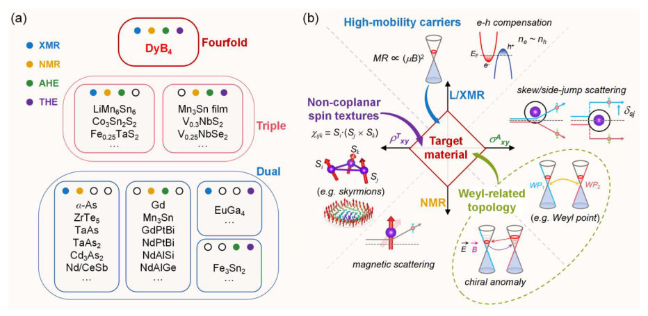
<figcaption class="paper-figure-caption"><b>Fig 1.</b> Figure 1. Classification and design strategy of materials with coexisting anomalous</figcaption>
</figure>
<figure class="paper-figure-card">
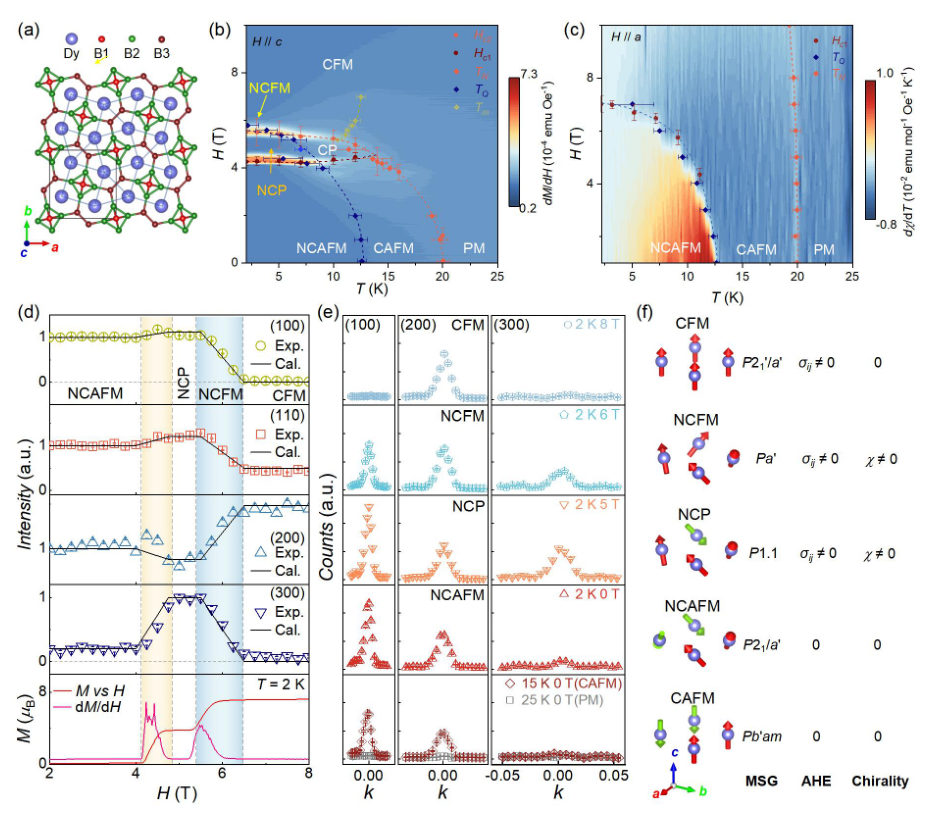
<figcaption class="paper-figure-caption"><b>Fig 2.</b> Figure 2. Crystal structure and magnetic phase diagram with multiple magnetic states.</figcaption>
</figure>
<figure class="paper-figure-card">
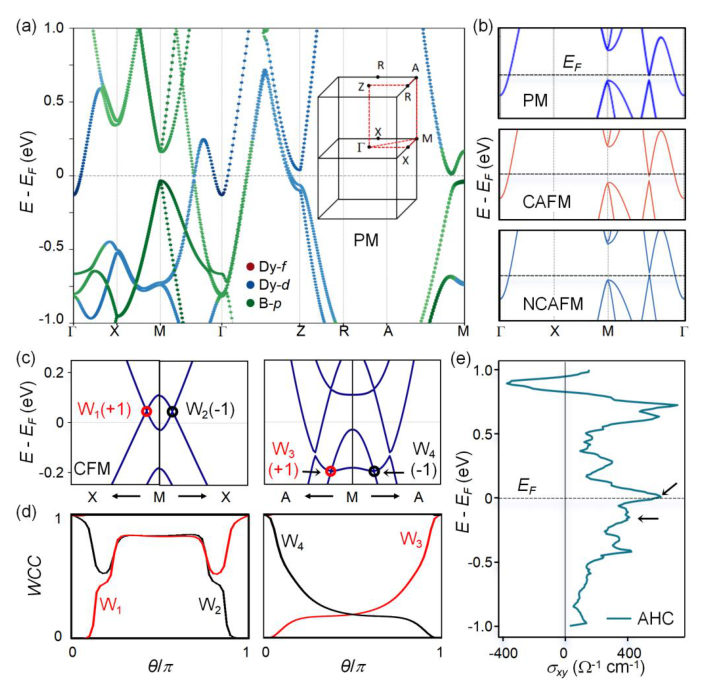
<figcaption class="paper-figure-caption"><b>Fig 3.</b> Figure 3. Electronic structure of DyB4 in different magnetic states and Weyl-related</figcaption>
</figure>
<figure class="paper-figure-card">
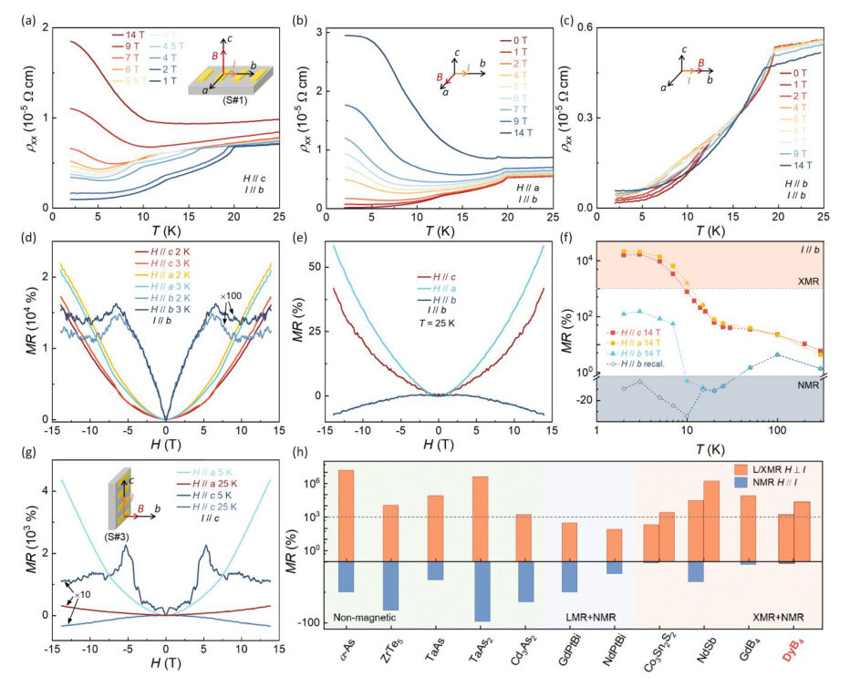
<figcaption class="paper-figure-caption"><b>Fig 4.</b> Figure 4. Metal-insulator-like crossover, extremely large transverse MR, and chiral-</figcaption>
</figure>
<figure class="paper-figure-card">
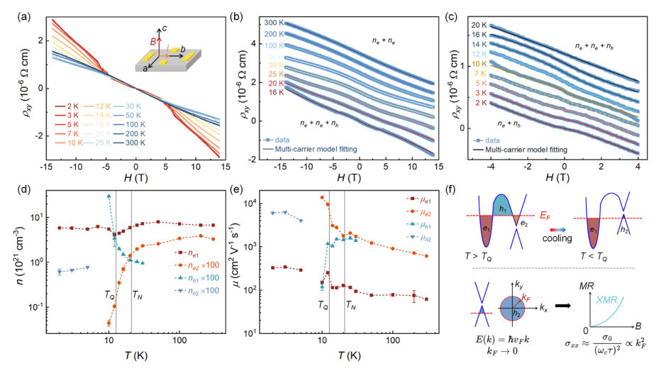
<figcaption class="paper-figure-caption"><b>Fig 5.</b> Figure 5. Hall resistivity analysis based on a multi-carrier model. (a) The field-dependent</figcaption>
</figure>
</div>

<p><strong>Summary.</strong> This work investigates DyB4 as a multifunctional magnetic Weyl semimetal capable of hosting multiple anomalous transport responses simultaneously. By combining neutron diffraction with advanced magnetotransport measurements and theoretical calculations, the authors demonstrate that tunable non-coplanar magnetism facilitates the coexistence of large magnetoresistance, AHE, and topological Hall effects. This suggests a promising route for designing next-generation magnetic topological materials.</p>
<p><strong>Why it may be interesting.</strong> The explicit connection drawn between localized $4f$ magnetism (rare-earth elements) and topological band features (Weyl semimetals) provides a concrete platform for studying emergent quantum phenomena driven by spin-orbit coupling and magnetic order, which is highly relevant to modern condensed matter theory.</p>
<details>
<summary>Detailed structure</summary>
<p><strong>Main problem.</strong> The research aims to identify a single material platform that can simultaneously exhibit and correlate multiple anomalous magneto-transport responses (magnetoresistance, AHE, topological Hall effect) by integrating orbital motion, momentum-space topology, and real-space spin chirality.</p>
<p><strong>Main result.</strong> DyB4 is identified as a rare magnetic Weyl semimetal exhibiting a fourfold combination of large magnetoresistance, chiral-anomaly-like negative magnetoresistance, anomalous Hall conductivity, and topological Hall responses.</p>
<p><strong>Method.</strong> The study combines neutron diffraction to map field-tunable magnetic states with first-principles calculations (for electronic structure) and detailed magneto-transport measurements (MR, AHE, THE).</p>
<p><strong>Model / system.</strong> The physical system is DyB4, a frustrated rare-earth tetraboride proposed as a magnetic Weyl semimetal. Its functionality relies on the weak coupling between itinerant conduction electrons ($ ext{Dy-}4d/ ext{B-}2p$) and localized $4f$ moments ($    ext{Dy-}4f$).</p>
<p><strong>Key observables.</strong> Extremely large magnetoresistance (XMR), anomalous Hall conductivity ($\sigma_{Axy}$), topological Hall resistivity ($
ho_{Txy}$), and evidence of non-coplanar spin chirality ($\chi_{ijk}$).</p>
<p><strong>Important parameters / regimes.</strong> Field-tunable magnetic states, including Non-Coplanar Antiferromagnetic (NCAFM) and Ferromagnetic (NCFM) phases; the Fermi level proximity to Weyl points.</p>
<p><strong>Assumptions / limitations.</strong> The analysis relies on multi-carrier modeling for Hall resistivity and assumes that the observed phenomena are governed by the interplay between orbital motion, Berry curvature, and spin chirality.</p>
<p><strong>Figures summary.</strong> Figures illustrate the classification of materials with coexisting anomalous responses (Fig 1), $  ext{H-T}$ phase diagrams showing magnetic transitions (Fig 2), electronic band structures revealing Weyl points (Fig 3), and transport measurements demonstrating XMR/NMR coexistence across different magnetic phases (Figs 4, 5, 6).</p>
<p><strong>Paper structure.</strong> The paper first establishes the theoretical motivation by classifying materials exhibiting coexisting anomalous responses. It then presents experimental evidence using neutron diffraction to map field-tunable non-coplanar magnetic states in DyB4. Finally, it correlates these magnetic structures with transport measurements and electronic structure calculations to demonstrate the fourfold multifunctionality.</p>
</details>
<details>
<summary>Abstract</summary>
<p>Anomalous magneto-transport responses provide complementary probes of orbital motion, momentum-space topology, and real-space spin chirality, yet their integration into a single material remains rare because their underlying requirements often compete. A promising materials-design strategy is to realize a magnetic Weyl semimetal that combines linearly dispersive high-mobility bands with tunable non-coplanar magnetism while limiting spin-dependent scattering. Here we identify DyB4, a frustrated rare-earth tetraboride, as a magnetic Weyl semimetal candidate that embodies this strategy and hosts intertwined magnetoresistance and Hall multifunctionality. Neutron diffraction reveals a sequence of field-tunable magnetic states, including non-coplanar spin configurations and PT-symmetry-broken phases. First-principles calculations identify steep linear dispersions and field-induced Weyl points near the Fermi level. Magneto-transport measurements establish a rare fourfold combination of extremely large magnetoresistance, chiral-anomaly-like negative magnetoresistance, large anomalous Hall conductivity arising from cooperative intrinsic Berry curvature and skew scattering, and scalar-spin-chirality-driven topological Hall responses. This multifunctionality arises from the distinct yet weakly coupled roles of itinerant carriers and localized 4f moments, which enable high-mobility transport, field-induced Weyl topology, and non-coplanar magnetism. DyB4 therefore provides a 4f-electron platform for correlating orbital transport, momentum-space Berry curvature, and real-space spin chirality, suggesting a route toward multifunctional magnetic topological materials.</p>
</details>
<p><sub><a href="#top">↑ back to top</a></sub></p>

<p><a id="paper-2607.28620"></a></p>
<h3 id="on-optimal-measurement-state-preparation-via-geometric-transport-of-the-squeezing-ellipse"><a href="http://arxiv.org/abs/2607.28620v1">On Optimal Measurement-State Preparation via Geometric Transport of the Squeezing Ellipse</a></h3>
<p><strong>Authors:</strong> Vsevolod Salakhutdinov, Nikolay Kalinin<br>
<strong>Type:</strong> theory · <strong>Category:</strong> other · <strong>PDF:</strong> <a href="https://arxiv.org/pdf/2607.28620v1">https://arxiv.org/pdf/2607.28620v1</a><br>
<strong>Analysis basis:</strong> full PDF text, analyzed in chunks
<strong>Topic relevance:</strong> <code>quantum measurements</code> <strong>3/5</strong> · <code>measurement-induced transitions</code> <strong>2/5</strong> · <code>interference shaping light</code> <strong>1/5</strong> · <code>quantum optics experiment</code> <strong>1/5</strong></p>
<div class="figure-strip-hint">↔ Scroll figures horizontally</div>
<div class="paper-figures-scroll">
<figure class="paper-figure-card">
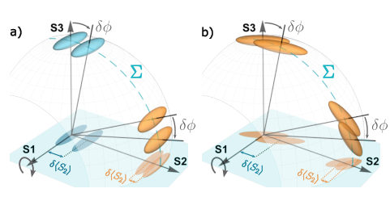
<figcaption class="paper-figure-caption"><b>Fig 1.</b> FIG. 1. Illustration to the optimal measurement state definition. Initial states under different starting conditions evolve into final states displaced by a small phase variation δϕ along the geodesic trajectory Σ, followed by projection onto the plane {S1, S2}. a) Properly oriented squeezed ellipsoids allow resolution of the uncertainty regions of the initial and final states. Localization near the pole (S3 = +1) maximizes the displacement δ⟨S2⟩. b) Non-oriented squeezed ellipsoids lead to overlap between the uncertainty regions of the initial and final states. In this case, localization near the S3 = +1 pole alone does not resolve the uncertainty regions.</figcaption>
</figure>
<figure class="paper-figure-card">

<figcaption class="paper-figure-caption"><b>Fig 2.</b> FIG. 2. Illustrative representation of a smooth curve Γ(t) through successive infinitesimal elements of ro- tation circles. (a) Coincidence between Γ(t) and Γcirc.(t) over a local infinitesimal arc element dl. (b) The arc dl repre- sented via a circle constructed about the axis ⃗T(t), reducing the problem to 2D. ⃗τ(t) - tangent vector to Γ(t) shared by both the tangent plane to the sphere and the plane of the auxiliary circle Γcirc.(t). The vector ⃗T(t) defines the orien- tation of the waveplate, and lies in the plane {S1, S2}. The radius R(t) of the circle Γcirc.(t) is determined by geometry of the described system.</figcaption>
</figure>
<figure class="paper-figure-card">

<figcaption class="paper-figure-caption"><b>Fig 3.</b> FIG. 3. Representative transformation trajectories Γ(t) and corresponding control parameters. a) The spiral-like (blue) and axial-rotation (orange) transformation trajectories. The angle θsq specifies the orientation of the squeezing ellipse major axis, represented by the vector ⃗psq in the tangent plane, relative to the azimuthal direction ⃗eα. b) Corresponding control parameters of the multilayer wave- plate device. The local layer thickness dh(t) obtained from the eq. (4) and is expressed in units of  λ 2π(ne−no)  . The angle</figcaption>
</figure>
<figure class="paper-figure-card">

<figcaption class="paper-figure-caption"><b>Fig 4.</b> FIG. 4. Multilayer waveplate stack approximating the continuous transformation. The thickness of the layer dhi(ti) is determined by eq. (4). The orientation of the wave- plate axis to the vertical-horizontal basis is obtained by angle between axis S1 and vector ⃗T(t) shown in Fig. 2.</figcaption>
</figure>
</div>

<p><strong>Summary.</strong> This paper introduces a geometric framework to optimize measurement-state preparation for squeezed quantum systems. It treats the orientation of the squeezing ellipse as an additional controllable degree of freedom evolving along the mean state's trajectory on the unit sphere. The key finding is that this controlled rotation depends fundamentally on the solid angle enclosed by the path, offering a unified theoretical tool applicable across various physical platforms like optical polarization.</p>
<p><strong>Why it may be interesting.</strong> This work provides a deep connection between the nonclassical structure (squeezing) of quantum states and the topology/geometry of their evolution path in parameter space, which is highly relevant for understanding controlled quantum dynamics beyond standard geometric phase considerations.</p>
<details>
<summary>Detailed structure</summary>
<p><strong>Main problem.</strong> The core problem is developing a geometric framework to prepare an initial squeezed quantum state into one that is optimal for measurement in quantum metrology.</p>
<p><strong>Main result.</strong> The orientation of the squeezing ellipse can be controlled as a geometric degree of freedom, and its evolution is determined by the solid angle enclosed by the mean-state trajectory on the unit sphere.</p>
<p><strong>Method.</strong> The authors use a geometric framework based on SU(2) dynamics, relating state preparation to path integrals and geometric phase concepts derived from spherical geometry.</p>
<p><strong>Model / system.</strong> The analysis focuses on SU(2)-symmetric systems, exemplified by polarization-squeezed light (mapped onto the Poincaré sphere). The evolution is described as a trajectory $\Gamma(t)$ on the unit sphere.</p>
<p><strong>Key observables.</strong> Measurement sensitivity ($\Delta\phi$), squeezing ellipse orientation, and the solid angle enclosed by the state trajectory.</p>
<p><strong>Important parameters / regimes.</strong> Squeezing angle ($  heta_{sq}$), path geometry (solid angle $\Omega_{\Sigma}$), and control parameters for birefringent elements ($h(t)$, $\alpha(t)$).</p>
<p><strong>Assumptions / limitations.</strong> The continuous transformation is often approximated by piecewise constructions of circular arcs, leading to systematic deviations from the ideal smooth evolution.</p>
<p><strong>Figures summary.</strong> Figures illustrate optimal vs. non-optimal squeezing alignments (Fig. 1), the state evolution curve $\Gamma(t)$ on the sphere decomposed into infinitesimal rotations (Fig. 2), and control parameter variations for physical realization (Fig. 3).</p>
<p><strong>Paper structure.</strong> The paper establishes the geometric necessity of aligning both the mean state and the squeezing ellipse for optimal measurement, derives the relationship between rotation angle and solid angle, and details physical implementations using continuously varying birefringent elements.</p>
</details>
<details>
<summary>Abstract</summary>
<p>Preparation of optimal measurement states is a key requirement in quantum metrology utilizing squeezed states. We discuss a geometric framework that transforms an initially misaligned squeezed input into a measurement-optimal state in SU(2)-symmetric systems. Within this framework, the orientation of the squeezing ellipse constitutes an additional geometric degree of freedom and evolves as the mean state follows a controlled trajectory on the unit sphere. The resulting rotation of the ellipse is determined by the geometry of the path and, for the relevant class of transformations, depends on the solid angle enclosed by the trajectory, establishing a connection with the geometric phase. The discussed framework is applicable to different physical platforms. As a particular example, we consider polarization-squeezed light and outline a possible implementation using a continuously varying birefringent element.</p>
</details>
<p><sub><a href="#top">↑ back to top</a></sub></p>

<p><a id="paper-2607.28063"></a></p>
<h3 id="deterministic-qkd-source-robust-against-side-channel-attacks"><a href="http://arxiv.org/abs/2607.28063v1">Deterministic QKD source robust against side-channel attacks</a></h3>
<p><strong>Authors:</strong> Kiyoshi Tamaki, Marcos Curty, Akihiro Mizutani, Álvaro Navarrete<br>
<strong>Type:</strong> theory · <strong>Category:</strong> quantum information and computing · <strong>PDF:</strong> <a href="https://arxiv.org/pdf/2607.28063v1">https://arxiv.org/pdf/2607.28063v1</a><br>
<strong>Analysis basis:</strong> full PDF text, analyzed in chunks
<strong>Topic relevance:</strong> <code>interference shaping light</code> <strong>3/5</strong> · <code>driven-dissipative phase transition</code> <strong>1/5</strong> · <code>methods for driven-dissipative</code> <strong>1/5</strong> · <code>quantum optics experiment</code> <strong>1/5</strong></p>
<div class="figure-strip-hint">↔ Scroll figures horizontally</div>
<div class="paper-figures-scroll">
<figure class="paper-figure-card">

<figcaption class="paper-figure-caption"><b>Fig 1.</b> FIG. 1. Schematic of the first stage, the Intensity Package (IntP). The quantities µ and θ1 (θ2) denote the mean photon number and global phase, respectively, of the pulse generated by GSL1 (GSL2). HBS, RPM, PM, and sI denote a half-beam splitter, a relative-phase measurement unit, a phase modula- tor, and the intensity setting selected by Alice, respectively. Specifically, the PM applies the sum of the relative phase r12 between the two GSLs, as measured by the RPM, and an addi- tional phase shift sI, chosen according to the desired output intensity, thereby generating an output pulse with the tar- get mean photon number. Importantly, from Eve’s perspec- tive, the applied phase r12 + sI is...</figcaption>
</figure>
<figure class="paper-figure-card">

<figcaption class="paper-figure-caption"><b>Fig 2.</b> FIG. 2. Schematic of the second stage. The inputs to this setup are two pulses generated by the IntP and separated in time. The early and late pulses, marked in black and white, respectively, each have mean photon number ν, and global phase ϕ1 and ϕ2, respectively. These pulses are split by a HBS. One of the resulting pulse pairs is sent to another HBS equipped with a delay line at one of its output ports. This delay line is adjusted so that the pulse originating from the early input pulse overlaps well in time with the late pulse in a time slot referred to as “even”. The relative-phase measure- ment (RPM) is then performed only in the “even” time slot to measure the relative phase r′ 12 ∶=...</figcaption>
</figure>
<figure class="paper-figure-card">

<figcaption class="paper-figure-caption"><b>Fig 3.</b> FIG. 3. Schematic of the alternative setup for the IntP. The middle pulse (marked in gray) at the output port is used as the input to the second stage in Fig. 2. The scheme for relative- phase measurement (RPM) and phase shift is the same as that in Fig. 2, except that the phase-shift value is chosen according to the intended intensity. After applying the phase shift, a one-bit-delay MZI causes the two pulses to interfere, produc- ing three output pulses; the middle pulse is the intended one. The first and last pulses, marked in black and white, respec- tively, are not used by Alice but carry information about the random phases and must therefore be blocked.</figcaption>
</figure>
</div>

<p><strong>Summary.</strong> This paper introduces a novel Quantum Key Distribution (QKD) source designed to be inherently secure against side-channel attacks like Trojan-horse attacks. By engineering the phase randomization across two stages, it achieves high key rates while eliminating reliance on imperfect components or post-selection procedures. This offers a practical path toward deploying truly implementation-secure quantum communication systems.</p>
<p><strong>Why it may be interesting.</strong> This work directly addresses practical implementation loopholes in quantum communication protocols, which is a major focus area at the intersection of quantum optics and information theory.</p>
<details>
<summary>Detailed structure</summary>
<p><strong>Main problem.</strong> Practical Quantum Key Distribution (QKD) security is threatened by source side channels, such as Trojan-horse attacks, which are not accounted for in idealized security proofs.</p>
<p><strong>Main result.</strong> The authors propose a QKD source design that is intrinsically robust against these side-channel attacks without sacrificing key rate or requiring perfect components.</p>
<p><strong>Method.</strong> The scheme utilizes a two-stage process involving phase randomization and controlled phase shifts to ensure the output state's security relies on random phases unknown to an eavesdropper (Eve).</p>
<p><strong>Model / system.</strong> The system involves an Intensity Package (IntP) stage using gain-switched lasers, relative-phase measurement (RPM), and a phase modulator, followed by a second interference stage before single-photon attenuation.</p>
<p><strong>Key observables.</strong> Output mean photon number ($\mu_{	ext{out}}$) and the resulting output phase ($  heta_{  ext{out}}$).</p>
<p><strong>Important parameters / regimes.</strong> Phase shifts ($s_I, s_b$), path transmittances ($\eta_{path}, \eta$), and input mean photon numbers ($\mu$).</p>
<p><strong>Assumptions / limitations.</strong> The security relies on five core assumptions (A1-A5), including stable intensities and the randomness of relative phases inaccessible to Eve.</p>
<p><strong>Figures summary.</strong> Figure 1 shows the IntP stage components (HBS, RPM, PM); Figure 2 details the second stage involving interference and phase shifting before the quantum channel output.</p>
<p><strong>Paper structure.</strong> The paper first identifies the security gap due to side channels. It then proposes the two-stage source architecture, detailing the physics of phase randomization in the IntP, followed by the basis-dependent encoding in the second stage to achieve optical privacy and high key rates.</p>
</details>
<details>
<summary>Abstract</summary>
<p>Quantum key distribution (QKD) is secure in principle, but practical security can be undermined by discrepancies between real devices and the idealized models assumed in security proofs. Source side channels, including those exploited by Trojan-horse attacks, are particularly detrimental: neglecting them compromises implementation security, whereas accounting for them reduces performance. Here we propose a QKD source that is intrinsically robust against side-channel attacks. Unlike existing passive and modulator-free schemes, it requires neither post-selection of the emitted pulses nor devices with a perfect extinction ratio to suppress side channels, and it does not introduce correlations between the intensity and the encoded bit or basis. Consequently, simpler security proofs apply directly, yielding substantially higher key rates. Our proposal appears to be within reach of current technology and therefore provides a clear and practical path toward implementation-secure QKD.</p>
</details>
<p><sub><a href="#top">↑ back to top</a></sub></p>

<p><a id="paper-2607.27970"></a></p>
<h3 id="towards-quantum-networks-characterizing-raman-noise-over-metropolitan-scale-fiber-network"><a href="http://arxiv.org/abs/2607.27970v1">Towards Quantum Networks: Characterizing Raman Noise over Metropolitan-scale Fiber Network</a></h3>
<p><strong>Authors:</strong> Marcello Caleffi, Laura d'Avossa, Italo Ignacio Machuca Flores, Marco Grillo, Elena Montella, Angela Sara Cacciapuoti<br>
<strong>Type:</strong> experiment · <strong>Category:</strong> quantum information and computing · <strong>PDF:</strong> <a href="https://arxiv.org/pdf/2607.27970v1">https://arxiv.org/pdf/2607.27970v1</a><br>
<strong>Analysis basis:</strong> full PDF text, analyzed in chunks
<strong>Topic relevance:</strong> <code>quantum optics experiment</code> <strong>3/5</strong> · <code>QC/QI experiment</code> <strong>1/5</strong> · <code>interference shaping light</code> <strong>1/5</strong> · <code>quantum measurements</code> <strong>1/5</strong></p>
<div class="figure-strip-hint">↔ Scroll figures horizontally</div>
<div class="paper-figures-scroll">
<figure class="paper-figure-card">

<figcaption class="paper-figure-caption"><b>Fig 1.</b> Fig. 1: Scheme of the 7Km urban fiber loop of University of Naples Federico II. The first path, P1, connects Monte Sant’Angelo (MSA) campus to the Engineering Faculty (EF) campus. The loop is closed through the second path, P2, which enables the return transmission of photons back to MSA campus. a) MSA campus hosts the laboratory (Lab), where photons are generated and detected after completing the loop. The campus also contains the Point of Presence (PoP), which provides access to the metropolitan fiber network. b) At the Engineering Faculty (EF) campus, the branches P1 and P2 are interconnected through a patch fiber, thereby establishing the return path toward MSA campus.</figcaption>
</figure>
<figure class="paper-figure-card">

<figcaption class="paper-figure-caption"><b>Fig 2.</b> Fig. 2: Experimental setup within the National Quantu- mInternet.it testbed. A classical signal in the O-band, gener- ated either by a commercial SFP transmitter or by a narrow- linewidth laser source, is filtered through cascaded WDM modules and launched into the 7Km urban fiber loop. Raman- scattered photons generated in the C-band are spectrally se- lected using a tunable narrowband filter and detected by a superconducting nanowire single-photon detector (SNSPD).</figcaption>
</figure>
<figure class="paper-figure-card">

<figcaption class="paper-figure-caption"><b>Fig 3.</b> Fig. 3: Experimental results of Raman scattering spectra. C-band SpRS photons generated from O-band classical sources are measured in terms of photon counts per second as a function of wavelength, corresponding to the ITU DWDM channels. The data include measurements obtained using both a narrowband laser source and a commercial SFP transmitter over the full fiber loop (7 km) and a one-way path (3.5 km). In (a) - Raw data, an additional reference measurement with no launched signal is included to identify background contributions. In (b) - Normalized data, an additional 5 km laboratory fiber spool measurement is reported, showing consistency between the urban-scale measurements and in-ab...</figcaption>
</figure>
</div>

<p><strong>Summary.</strong> This paper experimentally characterizes Raman noise generated when classical signals co-propagate with quantum signals in metropolitan optical fiber links. By measuring this noise over a 7 km urban loop, the authors demonstrate that Raman scattering significantly degrades the quantum SNR. The findings offer vital, practical guidelines for allocating optimal frequency channels to enable scalable quantum communication over existing telecom infrastructure.</p>
<p><strong>Why it may be interesting.</strong> This work directly addresses the engineering feasibility of scaling quantum communication by quantifying a dominant real-world noise source (Raman scattering) in existing infrastructure, which is crucial knowledge for developing robust quantum networks.</p>
<details>
<summary>Detailed structure</summary>
<p><strong>Main problem.</strong> The primary challenge addressed is how noise, specifically Raman scattering generated by classical O-band signals, degrades quantum entanglement distribution in large-scale metropolitan optical fiber networks.</p>
<p><strong>Main result.</strong> Raman-induced noise was found to be a dominant source limiting the quantum signal-to-noise ratio (SNR) in realistic deployments. The study provides practical guidelines for selecting optimal C-band spectral regions less susceptible to this noise.</p>
<p><strong>Method.</strong> The authors conducted measurements over a 7 km metropolitan fiber loop, comparing results from controlled laboratory settings against real-world deployed telecommunication environments using SNSPD detectors.</p>
<p><strong>Model / system.</strong> The system is a standard single-core optical fiber operating in the C-band for quantum signals and co-propagating with classical O-band traffic. The analysis focuses on the physical interaction causing Raman scattering noise within this existing infrastructure.</p>
<p><strong>Key observables.</strong> Raman noise contribution to the quantum signal-to-noise ratio (SNR), spectral variations of Raman noise across DWDM channels, and localized spectral anomalies.</p>
<p><strong>Important parameters / regimes.</strong> Metropolitan fiber link length (7 km), operating bands (O-band classical source vs. C-band quantum detection), and specific frequency windows for channel allocation.</p>
<p><strong>Assumptions / limitations.</strong> The study assumes that the co-propagation of signals in the same single-core fiber is the relevant physical scenario, moving beyond idealized laboratory setups to account for environmental inhomogeneities.</p>
<p><strong>Figures summary.</strong> Figures illustrate the 7 km urban fiber loop setup and the experimental apparatus. Spectra (Fig. 3) compare raw and normalized Raman scattering measurements taken over different path lengths, comparing lab vs. urban data.</p>
<p><strong>Paper structure.</strong> The paper establishes the problem of noise in hybrid quantum/classical networks, details the metropolitan-scale experimental setup and methodology for measuring Raman noise, presents comparative spectral results showing consistency but also localized anomalies, and concludes with practical guidelines for channel allocation.</p>
</details>
<details>
<summary>Abstract</summary>
<p>The coexistence of quantum and classical signals in optical fiber infrastructures represents a major challenge for large-scale quantum networks, as noise sources such as Raman scattering can significantly impact entanglement distribution, and the quantum protocols based on it. In this work, we analyze Raman scattering in the C-band, used for entanglement distribution, generated by a classical the O-band signal. The main contribution of this study lays in investigating these effects in a real metropolitan-fiber network, moving beyond controlled laboratory experiments to deployed telecommunication environments. Measurements are performed over a 7 km metropolitan fiber link using commercial sources and narrowband lasers. The experimental results shows good agreement between the measurements taken under laboratory conditions, although, within the metropolitan-scale loop, localized spectral anomalies are observed in the deployed fibers. Therefore, our results show that, whenever a quantum signal propagates in the C-band alongside an O-band classical channel within the same fiber, careful selection of the operating frequency is required, as Raman scattering and other real-world noise sources can significantly affect the quality and stability of the quantum transmission. In particular, we identify spectral regions that are less affected by Raman noise, thereby providing practical guidelines for optimal quantum channel allocation. We demonstrate that Raman-induced noise constitutes a dominant contribution to the quantum signal-to-noise ratio (SNR) in realistic deployments, beyond background and detector noise. Overall, our findings offer practical insights for deploying quantum communication systems over existing fiber networks, supporting the development of robust and scalable quantum infrastructures.</p>
</details>
<p><sub><a href="#top">↑ back to top</a></sub></p>

<p><a id="paper-2607.28329"></a></p>
<h3 id="coupled-spin-density-wave-and-bond-order-driven-metal-insulator-transition-in-altermagnetic-cscrmath607mathsmath608matho"><a href="http://arxiv.org/abs/2607.28329v1">Coupled Spin-Density-Wave and Bond-Order Driven Metal-Insulator Transition in Altermagnetic CsCr$_2$S$_2$O</a></h3>
<p><strong>Authors:</strong> Chenchao Xu, Wansheng Bai, Guo-Xiang Zhi, Yi Liu, Xiaoqun Wang, Jianhui Dai, Chao Cao<br>
<strong>Type:</strong> theory · <strong>Category:</strong> strongly correlated electrons · <strong>PDF:</strong> <a href="https://arxiv.org/pdf/2607.28329v1">https://arxiv.org/pdf/2607.28329v1</a><br>
<strong>Analysis basis:</strong> full PDF text, analyzed in chunks
<strong>Topic relevance:</strong> <code>spintronics-quantum-optics interface</code> <strong>3/5</strong> · <code>Keldysh / 2PI / non-Gaussian methods</code> <strong>1/5</strong> · <code>driven-dissipative phase transition</code> <strong>1/5</strong></p>
<div class="figure-strip-hint">↔ Scroll figures horizontally</div>
<div class="paper-figures-scroll">
<figure class="paper-figure-card">

<figcaption class="paper-figure-caption"><b>Fig 1.</b> FIG. 1. Crystal and magnetic structures of CsCr2S2O. (a) Side view of the layered crystal structure. (b) Top view of a [Cr2S2O] slab, showing the in-plane exchange pathways J1, J2, and J′ 2; J3 denotes the interlayer exchange. The black ar- rows indicate the local axes, with x pointing from Cr toward S and y from Cr toward O. The dxz and dyz orbitals are defined with respect to local coordinate of each Cr atom. Red ar- rows denote the collective in-plane displacement of the two S atoms. The blue dashed lines label the Cr2 columns that the S atoms approach, whereas the orange dashed lines label the Cr1 columns from which they recede. (c-j) Typical collinear magnetic configurations considered...</figcaption>
</figure>
<figure class="paper-figure-card">

<figcaption class="paper-figure-caption"><b>Fig 2.</b> FIG. 3. Electronic structures of CsCr2S2O unfolded to the P4/mmm primitive cell and the corresponding orbital- resolved DOS. Gray dashed curves denote the bands of undis- torted P4/mmm state. (a) At δxS = 2%, C4-symmetry breaking opens direct gaps at the band crossings marked by green circles at U = 2 eV. (b) At the double-well minimum (δxS = 5%), a full gap opens at U = 2 eV. (c) DOS of the undistorted P4/mmm state at U = 0 eV, showing that the Cr-dyz states are split to either side of EF, while the finite DOS at EF arises primarily from hybridized Cr-dxz and S-pz states. The Cr orbitals are labeled in the local axes defined in Fig. 1(b). (d) DOS corresponding to (a) and (b) in the upper and...</figcaption>
</figure>
<figure class="paper-figure-card">

<figcaption class="paper-figure-caption"><b>Fig 3.</b> FIG. 2. Correlation-induced structural, charge, and magnetic instabilities in C-AFM CsCr2S2O. (a) Total-energy variation with the displacement δxS of the two S atoms along the di- rection indicated by the red arrows in Fig. 1(b), calculated at U = 0, 2, and 4 eV. δxS = ∆xS/dCr−Cr × 100%, where ∆xS is the displacement of each S atom and dCr−Cr is the in-plane nearest-neighbor Cr-Cr distance in the undistorted structure. Double-well energy profiles develop for U = 2 and 4 eV, with minima near |δxS| = 5%. (b) Charge-density dif- ference between δxS = 0% and 5% at U = 2 eV; red and blue denote charge accumulation and depletion, respectively. Cr1 and Cr2 are marked by the orange and blue dashed...</figcaption>
</figure>
<figure class="paper-figure-card">

<figcaption class="paper-figure-caption"><b>Fig 4.</b> FIG. 4. Static susceptibilities of C-AFM CsCr2S2O in the kz = 0 plane. (a,b) Cr-dxz/yz sSDW susceptibility χamp(q) calculated in the magnetic primitive cell: (a) bare and (b) RPA susceptibilities for U = U ′ = 3 eV. (c,d) local Cr-dxz–S- pz bonding susceptibility calculated in the √</figcaption>
</figure>
</div>

<p><strong>Summary.</strong> This study theoretically elucidates the mechanism behind a Metal-Insulator Transition in $ ext{CsCr}_2 ext{S}_2    ext{O}$ by proposing that it results from the coupling between an itinerant Spin-Density Wave (sSDW) and Bond Order (BO) fluctuations. Using advanced electronic structure calculations, the authors show how pre-existing antiferromagnetism enables this coupled instability, leading to structural distortion and band gap opening.</p>
<p><strong>Why it may be interesting.</strong> This work provides a detailed theoretical framework for understanding how multiple competing orders (magnetic, charge, lattice) can cooperate in correlated materials to drive a phase transition, which is highly relevant to modern strongly correlated electron physics.</p>
<details>
<summary>Detailed structure</summary>
<p><strong>Main problem.</strong> The study identifies a Metal-Insulator Transition (MIT) driven by the cooperative coupling between Bond Order (BO) fluctuations and a secondary Spin-Density Wave (sSDW) instability in $ ext{CsCr}_2 ext{S}_2    ext{O}$.</p>
<p><strong>Main result.</strong> The coupled sSDW-BO mechanism successfully explains the structural MIT, charge disproportionation, and gap opening observed in the material, linking pre-existing antiferromagnetism to electronic correlation effects.</p>
<p><strong>Method.</strong> The research employs first-principles calculations (DFT) combined with tight-binding models and free energy minimization techniques to analyze competing order parameters.</p>
<p><strong>Model / system.</strong> The system is $ ext{CsCr}<em xz>2 ext{S}_2    ext{O}$, an altermagnetic material. The low-energy physics is modeled by the interaction between itinerant $    ext{Cr-}d</em>p_z$ orbitals, which are subject to both magnetic (sSDW) and structural/bonding (BO) instabilities.}$ and $   ext{S-</p>
<p><strong>Key observables.</strong> Band structure evolution showing gap opening; charge disproportionation ($\Delta
ho$); local moment modulation; and the minimization of a coupled free energy functional involving sSDW and BO order parameters.</p>
<p><strong>Important parameters / regimes.</strong> The transition is critically dependent on pre-existing C-AFM order, electronic correlations (e.g., $U$), and structural displacements ($\delta x_S$).</p>
<p><strong>Assumptions / limitations.</strong> The analysis assumes that the low-energy physics can be effectively described by coupling terms between the sSDW and BO fluctuations within a mean-field or RPA framework.</p>
<p><strong>Figures summary.</strong> Figures illustrate the energy landscape dependence on S displacement, showing structural distortion; band structures demonstrating gap opening upon distortion; and comparisons of bare vs. RPA static susceptibilities confirming order parameter enhancement.</p>
<p><strong>Paper structure.</strong> The paper first establishes the physical system and the need for a coupled mechanism. It then uses DFT/TB calculations to map out the energy landscape as a function of structural displacement, revealing the MIT. Finally, it employs free energy minimization using susceptibility analysis (RPA) to quantify the coupling between sSDW and BO order parameters.</p>
</details>
<details>
<summary>Abstract</summary>
<p>A metal-insulator transition (MIT) driven by bond order (BO) coupled with a secondary spin-density wave (SDW) is identified in CsCr$_2$S$_2$O. Such coupling is enabled as a result of the broken time-reversal symmetry due to the pre-existing C-type antiferromagnetic (C-AFM) order. First-principles calculations reveal an orbital-selective physics that Cr-$d_{yz}$ orbitals form local moments and establish the altermagnetic order, while the Cr-$d_{xz}$ orbitals remain metallic and hybridize with S-$p_z$. Thus the low-energy physics is governed by the Cr-$d_{xz}$ and S-$p_z$ orbitals. On-site interactions then enhance a secondary SDW ($s$SDW) instability of the itinerant $d_{xz}$ electrons, which couples to the Cr-$d_{xz}$-S-$p_z$ bonding order. The resulting coupled $s$SDW-BO simultaneously produces experimentally observed structural distortion, charge disproportionation, local Cr-moment modulation, and gap opening. Our results establish an orbital-selective mechanism upon which pre-existing altermagnetism and electronic correlations cooperate to drive a structural MIT.</p>
</details>
<p><sub><a href="#top">↑ back to top</a></sub></p>

<p><a id="paper-2607.27339"></a></p>
<h3 id="quantum-state-discrimination-with-stabilizer-circuits"><a href="http://arxiv.org/abs/2607.27339v1">Quantum State Discrimination With Stabilizer Circuits</a></h3>
<p><strong>Authors:</strong> Benjamin Stratton, Santiago Zamora, Rafael Chaves<br>
<strong>Type:</strong> theory · <strong>Category:</strong> quantum information and computing · <strong>PDF:</strong> <a href="https://arxiv.org/pdf/2607.27339v1">https://arxiv.org/pdf/2607.27339v1</a><br>
<strong>Analysis basis:</strong> full PDF text, analyzed in chunks
<strong>Topic relevance:</strong> <code>quantum measurements</code> <strong>3/5</strong> · <code>entanglement &amp; information structure</code> <strong>1/5</strong> · <code>measurement-induced transitions</code> <strong>1/5</strong></p>
<div class="figure-strip-hint">↔ Scroll figures horizontally</div>
<div class="paper-figures-scroll">
<figure class="paper-figure-card">

<figcaption class="paper-figure-caption"><b>Fig 1.</b> FIG. 1. A graphical depiction of the task of QSD, where the referee (R) gives the player (P) either the state ρ or the state σ, under (A) fixed stabilizer circuits with no ancilla (Pstab suc (∆)), (B) fixed stabilizer circuits with an ancilla (Pstab,f suc (∆, ω)), and (C) adaptive stabilizer circuits (Pstab,a suc (∆, ω)),</figcaption>
</figure>
<figure class="paper-figure-card">

<figcaption class="paper-figure-caption"><b>Fig 2.</b> FIG. 2. The minimum error success probability for all ⃗∆in the xz-plane for (A) stabilizer circuits, (B) stabilizer circuits with a single H-type magic state and adaptive measurements, and (C) unrestricted measurements (Helstrom’s).</figcaption>
</figure>
<figure class="paper-figure-card">

<figcaption class="paper-figure-caption"><b>Fig 3.</b> FIG. 3. Optimal success probability Pµ suc versus measurement non-stabilizerness µ. Discrimination of antipodal states along trajectories |T⟩→|0⟩(left, symmetric) and |T⟩→|H⟩(right, asymmetric) for s ∈{0, 0.25, 1} on the Bloch sphere (see Ap- pendix D). The analytical bound (lines) saturates the exact SDP maximum (markers) along the stabilizer octahedron’s symme- try axes (left). Conversely, for asymmetric trajectories (right), the SDP exploits measurement leakage to strictly exceed the analytical bound at intermediate µ.</figcaption>
</figure>
<figure class="paper-figure-card">

<figcaption class="paper-figure-caption"><b>Fig 4.</b> FIG. 4. The regions for which access to an H-type magic state does and does not allow an advantage to be gained in QSD under adaptive stabilizer circuits for all ⃗∆in the xz-plane.</figcaption>
</figure>
<figure class="paper-figure-card">

<figcaption class="paper-figure-caption"><b>Fig 5.</b> FIG. 5. The regions for which access to a state |η⟩which has |⃗n|↓= (0.9, 0.4, 0.173) does and does not allow an advantage to be gained in QSD under adaptive stabilizer circuits for all ⃗∆in the xz-plane.</figcaption>
</figure>
</div>

<p><strong>Summary.</strong> This paper analyzes the limits of quantum state discrimination when measurements are restricted to physically realizable stabilizer circuits. It demonstrates that adaptive measurement strategies offer a genuine advantage over fixed ones in achieving higher success probabilities. By formulating the problem using non-stabilizerness, the authors derive tight analytical bounds connecting hardware constraints to fundamental quantum information theory limits.</p>
<p><strong>Why it may be interesting.</strong> It provides rigorous theoretical tools for understanding how hardware limitations (like those imposed by stabilizer circuits) restrict fundamental quantum information tasks, which is crucial for designing fault-tolerant quantum computation protocols.</p>
<details>
<summary>Detailed structure</summary>
<p><strong>Main problem.</strong> The paper investigates minimum-error quantum state discrimination (QSD) success probability when measurement capabilities are restricted by physical constraints, specifically stabilizer circuits.</p>
<p><strong>Main result.</strong> Adaptive stabilizer measurements can provide a measurable advantage in QSD over fixed stabilizer measurements, and the optimal performance is bounded by incorporating non-stabilizerness into the optimization framework.</p>
<p><strong>Method.</strong> The analysis uses semidefinite programming (SDP) to optimize success probabilities under measurement constraints, deriving analytical bounds that interpolate between the ideal Helstrom limit and the restricted stabilizer limits.</p>
<p><strong>Model / system.</strong> The model involves distinguishing between two quantum states ($
ho$ and $\sigma$) in $n$-qubit systems. The core comparison is between measurements implementable by fixed vs. adaptive stabilizer circuits, and general POVMs.</p>
<p><strong>Key observables.</strong> Minimum-error success probabilities ($P_{	ext{suc}}$), the state difference operator ($\Delta = 
ho - \sigma$), and the non-stabilizerness monotone ($\mu$).</p>
<p><strong>Important parameters / regimes.</strong> The degree of adaptivity (fixed vs. adaptive circuits) and the allowed non-stabilizerness $\mu$.</p>
<p><strong>Assumptions / limitations.</strong> The analysis assumes equal prior probabilities for the states being discriminated, and later employs a 'no-leakage Ansatz' to derive lower bounds.</p>
<p><strong>Figures summary.</strong> Figures illustrate the QSD setup comparing fixed/adaptive stabilizer circuits; one figure shows the minimum error success probability across different state differences ($\vec{\Delta}$); another compares performance metrics for various $\vec{\Delta}$.</p>
<p><strong>Paper structure.</strong> The paper progresses by first establishing the general framework of QSD under measurement constraints, then systematically comparing fixed vs. adaptive stabilizer measurements (showing adaptivity is key), followed by formulating the problem as an SDP incorporating non-stabilizerness ($\mu$), and concluding with applications to quantum random access codes and fidelity bounds.</p>
</details>
<details>
<summary>Abstract</summary>
<p>The task of quantum state discrimination provides an operational characterization of distinguishability and plays a central role in quantum information science. Since the achievable success probability in quantum state discrimination depends both on the states being discriminated and on the allowed measurements, it is natural to study discrimination under physically motivated measurement constraints. Here, we investigate minimum-error quantum state discrimination under measurements implementable by both fixed and adaptive stabilizer circuits. Given arbitrary stabilizer-state ancillas, we show that fixed stabilizer circuits provide no additional discrimination power, whereas adaptive circuits do. Then, focusing on single-qubit systems, we derive analytical expressions for the success probability across both circuit classes when supplied with arbitrary (non-stabilizer) ancillas, showing that the performance gap between fixed and adaptive circuits persists. We further consider discrimination with non-stabilizerness incorporated directly into the measurement operators. Here, the optimization is formulated as a semidefinite program, and analytical bounds interpolating between the stabilizer and Helstrom limits for qubits are derived. Finally, we illustrate applications in quantum random access codes and bounds on unitary synthesis fidelity with a finite number of magic states.</p>
</details>
<p><sub><a href="#top">↑ back to top</a></sub></p>

<p><a id="paper-2607.28085"></a></p>
<h3 id="thermal-spin-transport-in-easy-planar-math633math-wave-altermagnets-controlled-by-magnetic-field"><a href="http://arxiv.org/abs/2607.28085v1">Thermal spin transport in easy-planar $d$-wave altermagnets controlled by magnetic field</a></h3>
<p><strong>Authors:</strong> Yuliia I. Gusieva, Kostiantyn V. Yershov, Jeroen van den Brink, Volodymyr P. Kravchuk<br>
<strong>Type:</strong> theory · <strong>Category:</strong> strongly correlated electrons · <strong>PDF:</strong> <a href="https://arxiv.org/pdf/2607.28085v1">https://arxiv.org/pdf/2607.28085v1</a><br>
<strong>Analysis basis:</strong> full PDF text, analyzed in chunks
<strong>Topic relevance:</strong> <code>spintronics-quantum-optics interface</code> <strong>3/5</strong> · <code>Keldysh / 2PI / non-Gaussian methods</code> <strong>1/5</strong> · <code>non-equilibrium dynamics</code> <strong>1/5</strong></p>
<div class="figure-strip-hint">↔ Scroll figures horizontally</div>
<div class="paper-figures-scroll">
<figure class="paper-figure-card">

<figcaption class="paper-figure-caption"><b>Fig 1.</b> FIG. 1. Schematic crystal structure and exchange interac- tions in a 2D d-wave altermagnet of rutile type. The model consists of two magnetic sublattices, A (cyan spheres, Rn) and B (yellow spheres, R′ n), with antiparallel (for Bz = 0) moments m1 and m2. Several Heisenberg exchange inter- actions are considered: the antiferromagnetic exchange Jafm (black dotted lines) couples nearest-neighbors of different sub- lattices; the ferromagnetic exchange Jfm (red dashed lines) couples nearest-neighbors within the same sublattice. The altermagnetic properties are modeled by additional superex- change bonds Jalt and −Jalt shown by the curved magenta and green lines, respectively. Note that the...</figcaption>
</figure>
<figure class="paper-figure-card">

<figcaption class="paper-figure-caption"><b>Fig 2.</b> FIG. 3. Precession of the neighboring magnetic moments belonging to different sublattices in the spin wave with the wave vector (kxa0, kya0) = (0.5, 0.5). The top and bottom rows correspond to the gapless ω−and gapped ω+ modes, respectively. Panels (a) and (b) show the antiferromagnetic (ε = 0) and altermagnetic (ε = 0.04) cases, respectively. In the latter case, the magnon magnetic moments µ± are gener- ated. In both cases, the magnetic field is absent (θ0 = π/2), κ = 0.1, and η = 0.5. The single-spin dynamics was recon- structed using Eq. (A13). The precession ellipses and the precession directions are shown from the perspective of an observer located at the tip of the vector m0 1. The...</figcaption>
</figure>
<figure class="paper-figure-card">

<figcaption class="paper-figure-caption"><b>Fig 3.</b> FIG. 2. Magnon spectra (4) for the easy planar NiF2. (a) Shows the evolution of two branches ω+ (red) and ω− (blue) within the 1st Brillouin zone. The value of splitting ∆ωk = ω+ −ω−is shown by the color coding at the bottom. Surface of the constant energy ω =const is shown on panel (b). (c) Shows the comparison of analytical prediction (4) and re- sults of numerical simulations along the path K′–Γ–X–K–Γ– Y . Here we use the following parameters: ε = 0.25, η = 0.1, κ = 0.5, and Bz = Jafm/µs.</figcaption>
</figure>
<figure class="paper-figure-card">

<figcaption class="paper-figure-caption"><b>Fig 4.</b> FIG. 4. Distribution of the magnon magnetic moment de- termined by Eq. (6) within the 1st Brillouin zone. Panel (a) shows the case Bz = 0. Magnetic moments, which corre- spond to the upper (µgs + ) and lower (µgs −) magnon branches, are shown by blue and yellow surfaces, respectively. Panel (b) shows the effect of suppression of µgs ± by the applied magnetic field. The k-dependencies are shown along the path K′−Γ−K by solid and dashed lines, which correspond to the lower and upper branches, respectively. The parameters used in the cal- culations are κ = 0.08, ε = 0.1, and η = 0.5.</figcaption>
</figure>
<figure class="paper-figure-card">

<figcaption class="paper-figure-caption"><b>Fig 5.</b> FIG. 5. Magnon magnetic moment (6) along the ground state N´eel vector n0 as a function of the anisotropy parameter κ for various values of the altermagnetic strength ε. Solid and dashed lines represent the lower (µgs −) and upper (µgs + ) magnon branches, respectively. Cases with Bz = 0 and Bz = 0.4Jafm/µs are compared in panels (a) and (b). In all cases, η = 0.5, and (kxa0, kya0) = (π/4, π/4).</figcaption>
</figure>
</div>

<p><strong>Summary.</strong> This paper theoretically analyzes thermal spin transport in easy-planar $d$-wave altermagnets, showing that the material's unique symmetry generates a momentum-dependent magnon magnetic moment. This moment drives a measurable spin current (spin-splitter effect) when subjected to a temperature gradient, and this conductivity can be tuned by an external magnetic field.</p>
<p><strong>Why it may be interesting.</strong> This work provides a detailed theoretical mechanism linking crystal symmetry (d-wave altermagnetism) directly to measurable non-equilibrium transport phenomena (thermal spin current), which is highly relevant for understanding emergent quantum magnetics and spintronics.</p>
<details>
<summary>Detailed structure</summary>
<p><strong>Main problem.</strong> The study investigates thermal spin transport mechanisms, specifically the spin-splitter effect, within easy-planar $d$-wave altermagnets under an external magnetic field.</p>
<p><strong>Main result.</strong> The research demonstrates that altermagnetism generates a momentum-dependent magnon magnetic moment, leading to a measurable spin current driven by a temperature gradient. This thermal spin conductivity can be actively tuned by applying a perpendicular magnetic field.</p>
<p><strong>Method.</strong> The authors employ theoretical methods involving linearizing the classical Landau-Lifshitz equation using the Holstein-Primakoff representation to derive magnon dispersion relations and calculate transport coefficients like spin conductivity.</p>
<p><strong>Model / system.</strong> The model is an easy-planar $d$-wave altermagnet, exemplified by a rutile-type material like NiF2. The Hamiltonian incorporates antiferromagnetic, ferromagnetic, and additional altermagnetic exchange interactions, alongside a Zeeman term from the external field B.</p>
<p><strong>Key observables.</strong> Magnon dispersion relation ($\omega_{\pm}(\mathbf{k})$), magnon magnetic moment ($\mu_
u(\mathbf{k})$), and thermal spin conductivity ($\sigma_{xy}$).</p>
<p><strong>Important parameters / regimes.</strong> The system behavior is controlled by the external magnetic field $B_z$, which tunes the magnitude of the altermagnetically generated magnetic moment.</p>
<p><strong>Assumptions / limitations.</strong> Key approximations include linearizing dynamics around the ground state and using the Holstein-Primakoff representation for spin wave analysis. The calculation also relies on specific limits, such as small fields or high temperatures for conductivity derivations.</p>
<p><strong>Figures summary.</strong> Figures illustrate the crystal structure with various exchange interactions, show magnon spectra confirming splitting ($\omega^+$ and $\omega^-$), and depict the precession of neighboring magnetic moments in different altermagnetic regimes.</p>
<p><strong>Paper structure.</strong> The paper builds from defining the physical system and Hamiltonian (including multiple exchange terms) to deriving the spin wave dynamics via linearization. It then calculates key observables like the magnon moment and finally extends this framework to derive the temperature-dependent spin conductivity tensor components.</p>
</details>
<details>
<summary>Abstract</summary>
<p>Altermagnets constitute a novel class of collinear spin-compensated materials in which magnon branches are spin-split even in the non-relativistic limit. The latter is the result of a more complex symmetry operation (compared to conventional antiferromagnets) that connects the two sublattices. Altermagnetic splitting strongly affects the magnon transport properties, leading, in particular, to the thermal magnon splitter effect in easy-axial $d$-wave altermagnets. Whether this effect also appears in easy-planar systems is not obvious, since the magnon branches do not carry a constant magnetic moment in this case. Here, we consider the easy-planar $d$-wave altermagnet of a rutile-type, e.g., NiF$_2$, and demonstrate the emergence of the altermagnetically generated magnon magnetic moment, which is momentum-dependent and possesses $d$-wave symmetry. This then leads to the spin-splitter effect, i.e., the emergence of a magnon-driven spin current (the flow of magnetic moment) in response to the applied temperature gradient. We also demonstrate that the corresponding thermal spin conductivity can be effectively tuned by an external magnetic field perpendicular to the easy plane.</p>
</details>
<p><sub><a href="#top">↑ back to top</a></sub></p>

<p><a id="paper-2607.28435"></a></p>
<h3 id="classical-tensor-network-and-quantum-fourier-transform-approaches-for-large-scale-carr-madan-option-pricing"><a href="http://arxiv.org/abs/2607.28435v1">Classical Tensor Network and Quantum Fourier Transform Approaches for Large-Scale Carr-Madan Option Pricing</a></h3>
<p><strong>Authors:</strong> Sascha Hauck, Ivica Turkalj<br>
<strong>Type:</strong> both · <strong>Category:</strong> numerical methods · <strong>PDF:</strong> <a href="https://arxiv.org/pdf/2607.28435v1">https://arxiv.org/pdf/2607.28435v1</a><br>
<strong>Analysis basis:</strong> full PDF text, analyzed in chunks
<strong>Topic relevance:</strong> <code>methods for driven-dissipative</code> <strong>3/5</strong> · <code>analog quantum simulation</code> <strong>1/5</strong></p>
<div class="figure-strip-hint">↔ Scroll figures horizontally</div>
<div class="paper-figures-scroll">
<figure class="paper-figure-card">

<figcaption class="paper-figure-caption"><b>Fig 1.</b> Figure 1. Quantum circuit of the QFT for the case of four qubits. The circuit separates into the actual transform Q4 and reordering circuit R4. Under the sign convention adopted in (9), the option-pricing calculation uses the inverse QFT, obtained by taking the adjoint of the displayed circuit. Adapted from Nielsen and Chuang (2000).</figcaption>
</figure>
<figure class="paper-figure-card">

<figcaption class="paper-figure-caption"><b>Fig 2.</b> Figure 3. Runtime over the discretization parameter n. Shown are the total runtime in seconds for the FFT- and SFFT-based option pricing algorithm as well as the SFFT-algorithm without the time used to construct the used operators denoted as Core.</figcaption>
</figure>
<figure class="paper-figure-card">

<figcaption class="paper-figure-caption"><b>Fig 3.</b> Figure 2. Memory comparison between the SFFT and FFT-based option-pricing method: (a) memory consumption in MB of both approaches and (b) rank scaling for the SFFT-based algorithm.</figcaption>
</figure>
<figure class="paper-figure-card">

<figcaption class="paper-figure-caption"><b>Fig 4.</b> Figure 4. NRMSE over discretization parameter n for the classical SFFT- and FFT-based option pricing algorithms.</figcaption>
</figure>
<figure class="paper-figure-card">

<figcaption class="paper-figure-caption"><b>Fig 5.</b> Figure 5. Runtime of quantum hardware over the discretization parameter n. Shown are Ttotal = Texec · S for different values of the shot parameter S. The default value for S on IBM hardware is S = 4096.</figcaption>
</figure>
</div>

<p><strong>Summary.</strong> This work tackles the computational bottleneck of large-scale option pricing by reformulating the problem using tensor networks. The Superfast Fourier Transform (SFFT) allows for accurate and memory-efficient calculation, achieving subexponential scaling compared to standard FFTs. It establishes a unified framework connecting classical tensor methods with quantum computing approaches for high-dimensional numerical tasks.</p>
<p><strong>Why it may be interesting.</strong> While focused on finance, the core mathematical tool—representing high-dimensional transforms via low-rank tensor networks (Tensor Trains)—is directly applicable to simulating complex many-body Hamiltonians or calculating correlation functions in quantum materials where exact diagonalization fails due to exponential scaling.</p>
<details>
<summary>Detailed structure</summary>
<p><strong>Main problem.</strong> The primary challenge is developing scalable computational methods for pricing European options using Fourier-based techniques, which suffer from exponentially growing memory requirements with increasing discretization size.</p>
<p><strong>Main result.</strong> The proposed Superfast Fourier Transform (SFFT) method, based on tensor networks, achieves subexponential scaling and significantly reduces memory overhead compared to conventional FFT implementations.</p>
<p><strong>Method.</strong> The authors reformulate the Carr-Madan pricing framework by mapping the required Fourier transform into a compressed Tensor Train representation (SFFT), allowing computation without explicitly constructing exponentially large vectors or operators.</p>
<p><strong>Model / system.</strong> The model is financial option pricing, specifically European options whose valuation relies on knowing the characteristic function of the underlying asset's log-price process. The computational comparison involves classical FFT, SFFT (tensor networks), and QFT implemented on quantum hardware/simulators.</p>
<p><strong>Key observables.</strong> Option price value, computational memory requirements, computational scaling ($\chi$, NRMSE).</p>
<p><strong>Important parameters / regimes.</strong> Discretization parameter $n$ (or number of grid points $M$), damping parameter $\alpha$.</p>
<p><strong>Assumptions / limitations.</strong> The QFT approach requires assuming the phase relationship between complex amplitudes based on non-negative probabilities; SFFT assumes that the Fourier transform can be efficiently represented by a low-rank tensor structure.</p>
<p><strong>Figures summary.</strong> Figures compare runtime scaling (QPU vs. FFT vs. SFFT), circuit depth/gate count growth with qubits, and convergence of pricing error (NRMSE) as discretization size increases.</p>
<p><strong>Paper structure.</strong> The paper progresses from establishing the limitations of classical Fourier methods to introducing the tensor network reformulation (SFFT). It then compares this classical approach against direct QFT implementations on quantum hardware/simulators, culminating in a comparative analysis of efficiency and accuracy across all three paradigms.</p>
</details>
<details>
<summary>Abstract</summary>
<p>Fourier-based methods are among the most widely used techniques for pricing European options when the characteristic function of the underlying asset process is available. Their applicability to increasingly fine discretizations, however, is limited by the rapidly growing memory requirements of classical Fourier transforms, which become a computational bottleneck for large-scale pricing problems.   In this work, we overcome this limitation by reformulating the Carr-Madan pricing framework using tensor networks. Specifically, we employ the Superfast Fourier Transform (SFFT), a compressed Tensor Train representation of the Quantum Fourier Transform (QFT), and apply it directly to tensorized option pricing without ever explicitly constructing exponentially large vectors or Fourier operators. This formulation also enables a direct comparison between the classical tensor network algorithm and its quantum counterpart through QFT-based option pricing on quantum simulators and quantum hardware. Numerical experiments for European call options demonstrate that the proposed SFFT method maintains pricing accuracy while substantially reducing memory requirements and achieving subexponential computational scaling compared with conventional FFT-based pricing. The accompanying quantum simulations and hardware executions enable a direct comparison between the classical tensor network formulation and its QFT-based quantum counterpart, showing that both approaches avoid the exponential scaling of conventional Fourier implementations and provide complementary perspectives on large-scale option pricing.   Together, these results establish a unified framework connecting classical Fourier pricing, tensor network algorithms, and quantum computing approaches, demonstrating how tensorized Fourier methods can provide scalable alternatives for high-dimensional financial computations.</p>
</details>
<p><sub><a href="#top">↑ back to top</a></sub></p>

<p><a id="paper-2607.27883"></a></p>
<h3 id="trainability-and-mode-separation-of-mixed-iqp-qcbms"><a href="http://arxiv.org/abs/2607.27883v1">Trainability and Mode Separation of Mixed IQP-QCBMs</a></h3>
<p><strong>Authors:</strong> Youngseok Lee, Hyunwoo Kim<br>
<strong>Type:</strong> theory · <strong>Category:</strong> disordered systems and neural networks · <strong>PDF:</strong> <a href="https://arxiv.org/pdf/2607.27883v1">https://arxiv.org/pdf/2607.27883v1</a><br>
<strong>Analysis basis:</strong> full PDF text, analyzed in chunks
<strong>Topic relevance:</strong> <code>exotic spin models in light-matter</code> <strong>3/5</strong> · <code>methods for driven-dissipative</code> <strong>1/5</strong></p>
<div class="figure-strip-hint">↔ Scroll figures horizontally</div>
<div class="paper-figures-scroll">
<figure class="paper-figure-card">

<figcaption class="paper-figure-caption"><b>Fig 1.</b> FIG. 1. Central mechanism of the mixed IQP-QCBM. Gray denotes the target, blue and green denote two branches, and arrows show their responses to training. Under the corresponding conditions of Sec. III, each initialization shown is locally trainable. (a) At uniform weights, tracing out the ancillas of Uanc-IQP(θ) yields L ancilla-free branches, each weighted by 1/L. (b) Data-agnostic and global initialization are branch-coincident, so their separating gradient vanishes. (c) Cluster initialization assigns different data clusters to the branches, giving distinct starting distributions and noncanceling separating gradients.</figcaption>
</figure>
<figure class="paper-figure-card">

<figcaption class="paper-figure-caption"><b>Fig 2.</b> FIG. 2. Exact tests of the three local predictions on the two n = 16 datasets. (a) Theorem 1, at the data-agnostic center: the one-body curvature follows the 8w{j}/L2 prediction of Theorem 1. (b) Theorem 2, at the global and cluster-initialized centers: the exact witness curvature c against the leading positive term clead defined in the text. Equation (24) requires only c ≥clead −Rn; the dotted diagonal c = clead is therefore a stronger finite-size reference. (c) Theorem 3, at branch-coincident starts (a = 1): the exact branch-separating gradient vanishes at coincidence and grows linearly with the existing spread (Pearson r &gt; 0.99) through the spread of the run initialization, marked by the...</figcaption>
</figure>
<figure class="paper-figure-card">

<figcaption class="paper-figure-caption"><b>Fig 3.</b> FIG. 3. Training dynamics and test MMD2 on the four benchmarks; columns are datasets, at the headline mixture size a = 3 (a = 4 for MNIST). (a)–(d) Training MMD2 against the training step: bold curves are 25-step moving averages of the seed mean, faint curves the raw mean, and bands one standard deviation. The unbiased finite-sample loss samples Pauli-Z operators and estimates model correlators and data moments; after removing self-correlations, values near zero may be slightly negative. (e)–(h) Test MMD2 against the ancilla count a (L = 2a), averaged over the sweep ¯m = 1, . . . , 6, with the train–test sampling reference (dashed) and the best classical RBM (dotted). Means and bands use...</figcaption>
</figure>
<figure class="paper-figure-card">

<figcaption class="paper-figure-caption"><b>Fig 4.</b> FIG. 4. Squared branch diversity [Eq. (15)] against test MMD2, both at the same kernel bandwidth, for individual trained models at a = 3 (blobs and D-Wave), a = 2 (Ising), and a = 4 (MNIST). One point per initialization scheme and training seed; dotted lines mark the train–test sampling references. Both coordinates are exact for n = 16 and estimated from corre- lators otherwise. The Spearman correlations between the two coordinates are −0.94 (blobs), −0.58 (Ising), −0.77 (D-Wave), and +0.61 (MNIST), with percentile-bootstrap 95 % confidence intervals (−0.97, −0.87), (−0.83, −0.20), (−0.97, −0.30), and (+0.01, +0.92) from 104 resamples.</figcaption>
</figure>
<figure class="paper-figure-card">

<figcaption class="paper-figure-caption"><b>Fig 5.</b> FIG. 5. Distributions of selected branches after training: four branches spanning the branch index of each mixture. Rows denote initialization schemes and columns denote branches ℓ. (a) Binary blobs (a = 3) and (c) binarized MNIST (a = 4): each cell is the mean image of one branch, in which each pixel shows the probability that the branch outputs a one at that pixel, with darker pixels denoting higher probability. (b) 2D Ising (a = 2, all four branches): exact branch magnetization densities (colored) over the training density (gray). Every configuration is trained at multiple seeds (ten at n = 16, five on MNIST); to display the differences between the schemes conservatively, each row shows...</figcaption>
</figure>
</div>

<p><strong>Summary.</strong> The paper proposes the mixed IQP-QCBM, an advanced quantum generative model designed for classical trainability. It demonstrates that achieving high fidelity requires 'mode separation,' which is best achieved using a cluster initialization scheme. This approach successfully trains the model to accurately reproduce complex data distributions found in areas like spin glasses and image recognition.</p>
<p><strong>Why it may be interesting.</strong> This work directly bridges quantum machine learning with statistical physics by applying highly structured quantum circuits (IQP) to model complex classical distributions found in disordered systems like spin glasses. The focus on 'mode separation' is a key concept for understanding how deep generative models capture distinct physical features.</p>
<details>
<summary>Detailed structure</summary>
<p><strong>Main problem.</strong> The research addresses developing quantum generative models (QCBMs) that are classically trainable while maintaining high expressive power, specifically focusing on the trainability and mode separation capabilities of mixed IQP-QCBMs.</p>
<p><strong>Main result.</strong> Cluster initialization significantly outperforms other methods by providing initial mode separation, allowing the model to converge fastest and achieve the lowest test MMD^2 across various complex datasets like spin glasses and MNIST.</p>
<p><strong>Method.</strong> The authors analyze training using the Maximum Mean Discrepancy (MMD) loss function, which is formulated as a weighted sum of squared Pauli-Z correlator mismatches between the model and data moments.</p>
<p><strong>Model / system.</strong> The core model is the mixed IQP-QCBM, an extension of Quantum Circuit Born Machines built from Instantaneous Quantum Polynomial-Time (IQP) circuits. It models the probability distribution as a weighted mixture over multiple 'branches,' each derived from an ancilla-free IQP circuit.</p>
<p><strong>Key observables.</strong> Test MMD^2 (Mean/Peak), Pauli-Z Correlators ($z_A(	heta)$), and Branch Diversity ($D_{	ext{branch}}$).</p>
<p><strong>Important parameters / regimes.</strong> The number of branches ($L$), the structure of the weights ($\pi_\ell$), and initialization schemes (data-agnostic, global, cluster).</p>
<p><strong>Assumptions / limitations.</strong> The analysis assumes the IQP circuit is 2-body, and that local barren plateau avoidance can be proven under specific initializations.</p>
<p><strong>Figures summary.</strong> Figures illustrate the mechanism of mode separation in QCBMs, contrasting coincident branches (suppressed gradients) with mode-separated branches (allowing open gradient flow).</p>
<p><strong>Paper structure.</strong> The paper introduces the mixed IQP-QCBM structure, proves local barren plateau avoidance for this model, and then empirically compares initialization strategies—particularly highlighting cluster initialization's success in achieving mode separation on benchmark datasets.</p>
</details>
<details>
<summary>Abstract</summary>
<p>Quantum circuit Born machines (QCBMs) based on instantaneous quantum polynomial-time (IQP) circuits are promising quantum generative models for their classical trainability. It is known that their ancilla-free form avoids barren plateaus under certain initializations, but remains non-universal. Although adding ancilla qubits raises the expressivity, whether the ancilla-extended model retains local trainability remains unknown. We propose the mixed IQP-QCBM, which generalizes the ancilla-extended circuit as a weighted mixture of ancilla-free IQP circuits, called branches. For a polynomial number of branches, we prove local barren-plateau avoidance from data-agnostic and, under certain assumptions, data-dependent initializations. We further show that the mixed IQP-QCBM can surpass the best ancilla-free IQP circuit only if its branches generate a number of distinct distributions. In particular, we focus on a behavior we call \emph{mode separation}, in which each branch captures a particular feature of the target. Mode separation is hard to attain from an initialization whose branches generate the same distribution: the gradients that would separate them are suppressed while the distributions they generate remain close. This motivates \emph{cluster initialization}, which assigns a different unsupervised data cluster to each branch and provides an initial degree of mode separation. Exact calculations on two 16-bit datasets support the barren-plateau and gradient-suppression claims. On four benchmarks, binary clusters, a two-dimensional Ising model, binarized MNIST, and a 484-spin glass, cluster initialization converges fastest and reaches the lowest mean test $\mathrm{MMD}^2$. We observe that, when achieving the lowest test $\mathrm{MMD}^2$, the mixed IQP-QCBM contains branches specialized to distinguishable data features such as blob patterns, magnetization sectors, or digit shapes.</p>
</details>
<p><sub><a href="#top">↑ back to top</a></sub></p>

<p><a id="paper-2607.27717"></a></p>
<h3 id="optimization-of-magneto-electric-properties-in-lead-free-xco12ti02fe16o4-100-xbatio3-based-composites"><a href="http://arxiv.org/abs/2607.27717v1">Optimization of magneto-electric properties in Lead-free (x)Co1.2Ti0.2Fe1.6O4 - (100-x)BaTiO3 based composites</a></h3>
<p><strong>Authors:</strong> Rajeev Dwivedi, Samanway Mohanta, Ashutosh Anand, Abhinash Tripathy, Najnin Bano, Dharmendra Kumar, Hemant Singh, R. Venkatesh, Sachin Gupta, Dinesh Kumar Shukla<br>
<strong>Type:</strong> experiment · <strong>Category:</strong> other · <strong>PDF:</strong> <a href="https://arxiv.org/pdf/2607.27717v1">https://arxiv.org/pdf/2607.27717v1</a><br>
<strong>Analysis basis:</strong> full PDF text, analyzed in chunks
<strong>Topic relevance:</strong> <code>spintronics-quantum-optics interface</code> <strong>3/5</strong></p>
<div class="figure-strip-hint">↔ Scroll figures horizontally</div>
<div class="paper-figures-scroll">
<figure class="paper-figure-card">

<figcaption class="paper-figure-caption"><b>Fig 1.</b> Fig. 1. Rietveld-refined X-ray diffraction patterns for (a) pure BTO, and (b) pure CTFO. (c) XRD</figcaption>
</figure>
<figure class="paper-figure-card">

<figcaption class="paper-figure-caption"><b>Fig 2.</b> Fig. 1 shows the room-temperature X-ray diffraction (XRD) patterns of all [(x)</figcaption>
</figure>
<figure class="paper-figure-card">

<figcaption class="paper-figure-caption"><b>Fig 3.</b> Fig. 2. XRD patterns along with Rietveld refinement for CTFO-BTO composites with</figcaption>
</figure>
<figure class="paper-figure-card">

<figcaption class="paper-figure-caption"><b>Fig 4.</b> Fig. 3. FE-SEM micrographs of CTFO–BTO composites: C10:B90, C20:B80, and C30:B70</figcaption>
</figure>
<figure class="paper-figure-card">

<figcaption class="paper-figure-caption"><b>Fig 5.</b> Fig. 4. Temperature dependence of (a) dielectric constant (ε&#x27;) and (b) dielectric loss (tanδ) for</figcaption>
</figure>
</div>

<p><strong>Summary.</strong> This work systematically optimizes lead-free multiferroic composites by combining $    ext{Co}$-based ferrite ($  ext{CTFO}$) with $  ext{BaTiO}_3$ ($    ext{BTO}$). By controlling both the material composition and the high-temperature sintering process, the researchers achieved a record high magnetoelectric coefficient. This demonstrates that microstructural engineering is crucial for developing next-generation multifunctional devices.</p>
<p><strong>Why it may be interesting.</strong> While focused on classical condensed matter physics (ferroelectrics/ferromagnetics), the concept of engineered interfacial strain transfer and coupled order parameters is relevant to understanding emergent quantum phenomena in heterostructures.</p>
<details>
<summary>Detailed structure</summary>
<p><strong>Main problem.</strong> The primary goal is the systematic optimization of magnetoelectric (ME) properties in lead-free multiferroic composites.</p>
<p><strong>Main result.</strong> The highest ME coefficient ($\sim 1.28 	ext{ mV/cm}\cdot	ext{Oe}$) was achieved using a $30	ext{CTFO} - 70	ext{BTO}$ composite sintered at $1200^\circ	ext{C}$.</p>
<p><strong>Method.</strong> The study employed solid-state synthesis followed by comprehensive characterization, including XRD, FESEM, and measurements of electrical (P-E) and magnetic ($ ext{M-H}$) properties.</p>
<p><strong>Model / system.</strong> The system is a two-phase composite: $  ext{Co}<em 0.2>{1.2}   ext{Ti}</em>_3$ (ferroelectric). The ME effect relies on strain transfer between these phases.}   ext{Fe}_{1.6}   ext{O}_4$ (ferromagnetic ferrite) and $ ext{BaTiO</p>
<p><strong>Key observables.</strong> Magnetoelectric coefficient ($\alpha_{	ext{ME}}$), dielectric constant ($\varepsilon'$), ferroelectric polarization ($P$), magnetization ($M$).</p>
<p><strong>Important parameters / regimes.</strong> Composition ratio ($    ext{x}=10, 20, 30$) and sintering temperature ($1100^\circ	ext{C}$ vs $1200^\circ	ext{C}$).</p>
<p><strong>Assumptions / limitations.</strong> The ME coupling is governed by the optimal balance between magnetostrictive strain (from ferrite) and piezoelectric response (from $ ext{BaTiO}_3$).</p>
<p><strong>Figures summary.</strong> XRD patterns confirm phase coexistence; FESEM shows grain growth dependence on sintering temperature; specific figures highlight the maximum $\alpha_{	ext{ME}}$ for $30	ext{CTFO} - 70	ext{BTO}$ at $1200^\circ	ext{C}$.</p>
<p><strong>Paper structure.</strong> The paper systematically investigates how varying the dopant-modified composition and sintering temperature affects structural integrity, phase coupling, and ultimately maximizes the magnetoelectric response.</p>
</details>
<details>
<summary>Abstract</summary>
<p>This work presents a systematic study of lead-free multiferroic composites of (x)Co1.2Ti0.2Fe1.6O4 - (100-x)BaTiO3 (x = 10, 20, 30), which were synthesized by a solid-state reaction method to investigate the effects of composition and sintering temperature on their structural , electrical, magnetic, and magnetoelectric (ME) properties. X-ray diffraction along with Rietveld refinement confirms the coexistence of tetragonal BaTiO3 (BTO) and cubic spinel Co1.2Ti0.2Fe1.6O4 (CTFO) phases. Microstructural analysis shows that densification and grain growth are better at higher sintering temperatures, leading to better coupling between the two phases. Dielectric and ferroelectric studies indicate lossy polarization-electric field (P-E) behaviour due to leakage from the conductive phase, while magnetic properties show increased magnetization with increasing ferrite content. All composites exhibit ME coefficients, which depend on the composition and sintering conditions; the highest ME coefficient (~1.28 mV/cm.Oe) was observed for the 30CTFO - 70BTO composite sintered at 1200 °C. This improvement is due to the optimal balance between magnetostrictive and piezoelectric responses and improved interfacial strain transfer. These results demonstrate that simultaneous optimization of dopant-modified composition and sintering conditions is essential for achieving improved magnetoelectric coupling in bulk multiferroic composites. Moreover, the results demonstrate the potential of lead-free composites for multifunctional device applications in next-generation, low-power technologies, including high-density non-volatile memory (e.g. FeRAM/MRAM), magnetic field sensors, spintronic devices, and actuators.</p>
</details>
<p><sub><a href="#top">↑ back to top</a></sub></p>
<hr>
<p>
<a href="index.html">← Index</a>
 · <a href="papers_03.html">← Previous</a> · <a href="papers_05.html">Next →</a>
</p>
<hr>

</body>
</html>
